Dedica
A mio padre
Vera la persona, vivo il ricordo
Indice
FAMIGLIA ROMAGNOLI – LI SALVISTRE (QUILL D’NA VOTE) E QUILL PRIME DI ISS
PREMESSA
Questo racconto, rivolto principalmente ai parenti, non ha la pretesa di descrivere la vita dei nostri antenati. La semplice raccolta di dati anagrafici (nascita, matrimonio, figli, etc.) non può infatti in alcun modo restituire la complessità di una vita, fatta di gioie, dolori, successi e insuccessi. Inoltre, i dati presentati sono spesso parziali, incompleti e certamente integrabili.
L’intero documento con tutti i suoi allegati, foto comprese, è comunque disponibile al link: https://federicoooo.github.io/antenati . L’apertura di alcuni file potrebbe impiegare diversi secondi e in alcuni casi richiede una connessione internet.
Ciò detto, il primo dubbio che ho avuto è stato: partire dall’antenato più antico per arrivare a quello più recente che ancora qualcuno ricorda, o viceversa?
Iniziare con l’antenato più antico ha lo svantaggio di cominciare con la descrizione di perfetti sconosciuti, ma ha il vantaggio di descrivere bene il contesto da cui provengono i vari discendenti. Viceversa, iniziare dall’antenato che ancora si ricorda e andare indietro negli anni, ha il vantaggio di partire dal “conosciuto”, ma lo svantaggio di non descrivere il contesto da cui deriva.
Ho scelto di mediare queste soluzioni partendo, almeno in questa prima versione, dal padre del “conosciuto”, scendere poi al figlio “conosciuto”, per poi tornare indietro negli anni seguendo questo schema padre-figlio. La lettura del documento ne chiarirà meglio il procedimento.
Scegliendo quindi andare a ritroso con l’andamento sopra descritto, inizierò escludendo sia la famiglia di mio padre - Domenico (1931-2004) di Silvestro - e dei miei zii, sia quella di mio nonno - Silvestro (1903-1980) di Domenico - poiché, almeno ad oggi diversi sono i viventi che ne hanno ancora memoria, me compreso. Comincerò quindi questo viaggio “anagrafico” nel passato, iniziando dal mio bisnonno, Domenico Romagnoli (1877-1951) e in particolare, per quanto detto sopra, da suo padre Silvestro (1842-1925) di Nicola.
Si precisa che i doppi o tripli nomi, quando è certa la loro natura, vengono indicati tra parentesi. Ad esempio, Maria (Palma Antonia) Casalanguida, ad indicare che il primo nome è Maria e che Palma Antonia rappresentavano rispettivamente secondo e terzo nome.
In giallo ho evidenziato le parti che necessitano di ulteriori verifiche, queste sono tuttavia visibili solo dopo aver scaricato il documento.
Per quanto riguarda alcune premature scomparse narrate in questo racconto, le ipotesi sulle cause di tali dipartite sono il risultato di una ricostruzione storica del territorio basata principalmente sul libro di Ferdinando Carabba, “Lanciano - Un profilo storico. Dalle origini al 1860”, pubblicato nel 1995.
Infine, si consiglia di mettersi comodi, di leggere con calma e soprattutto un po’ per volta, anche come segno di rispetto verso i diversi parenti qui ricordati. Del resto, tranne gli ultimi due capitoli (più discorsivi), si ricorda che in questa ricostruzione sono presenti soprattutto dati anagrafici (nascite, matrimoni, morti, parentele), per cui una lettura frettolosa renderebbe questo racconto, vista la natura già poco coinvolgente dei dati stessi, non certo appassionante.
Capitolo 1SILVESTRO ROMAGNOLI (1842-1925) DI NICOLA E SUO FIGLIO DOMENICO (1877-1951)
1.1 I CAPI FAMIGLIA
Prima di parlare di Domenico, come anticipato, inizierò da suo padre Silvestro (l’antenato più antico che abbiamo nella cappella del cimitero), figlio a sua volta di Nicola e di Maria (Palma Antonia) Casalanguida.
Silvestro (1842-1925) è stato il più piccolo in famiglia: aveva infatti due sorelle maggiori, Eufemia, nata il 27 marzo 1837, e Sabia, nata il 16 marzo 1839. Si è sposato due volte: prima con Sabia D’Angelo, da cui ha avuto la figlia Maria (Giovanna), e poi con Clementina Romagnoli, da cui ha avuto prima Sabia, poi il nostro Domenico, poi Rosalinda e poi altri due figli maschi, Niccola e Giovanni, morti prematuramente.
Silvestro Romagnoli (1842-1925) di Nicola
- 1842 - Nascita 14/18 febbraio 1842, Mozzagrogna
- 1849 - Morte genitore • Età 7 - Nicola Romagnoli, 18 febbraio 1849, Lanciano
- 1864 - Primo Matrimonio • Età 22 - Sabia D’Angelo, 28 luglio 1864, Lanciano (Santa Lucia)
- 1867 - Nascita figlia • Età 25 - Maria (Giovanna) Romagnoli, 07 settembre 1867, Mozzagrogna
- 1868 - Morte coniuge • Età 26 - Sabia D’Angelo (anni 22), 26 luglio 1868, Mozzagrogna
- 1870 - Secondo Matrimonio • Età 28 - Clementina Romagnoli, 26 aprile 1870, Mozzagrogna
- 1874 - Nascita figlia • Età 31 - Sabia Romagnoli, 11 maggio 1874, Mozzagrogna
- 1877 - Nascita figlio • Età 34 - Domenico Romagnoli, 13 aprile 1877, Mozzagrogna
- 1880 - Nascita figlia • Età 37 - Rosalinda Romagnoli, 30 ottobre 1880, Mozzagrogna
- 1883 - Morte genitore • Età 40 - Maria Palma Antonia Casalanguida, 29 luglio 1883, Mozzagrogna
- 1884 - Nascita figlio • Età 41 - Niccola Romagnoli, 3 maggio 1884, Mozzagrogna
- 1885 - Morte figlio • Età 42 - Niccola Romagnoli (1 anno), 22 luglio 1885, Mozzagrogna
- 1887 - Nascita figlio • Età 44 - Giovanni Romagnoli, 8 ottobre 1887, Mozzagrogna
- 1888 - Morte figlio • Età 45 - Giovanni Romagnoli (10 mesi), 12 agosto 1888, Mozzagrogna
- 1925 - Morte • Età 83 - 3 marzo 1925, Mozzagrogna
Osservazioni
Si evidenzia la perdita del padre all’età di 7 anni, nonché la prematura morte della prima moglie di soli 22 anni. Ha avuto 6 figli, di cui 2 morti precocemente. Fatta eccezione per mio zio Beniamino (oggi novantenne), Silvestro di Nicola risulta l’antenato maschio vissuto più a lungo (83 anni).
Curiosità
Dai documenti a disposizione, ho notato dei possibili cambi di residenza: “ Strada Romagnoli ” alla nascita della prima figlia Sabia ( 1874 ); “ V ia Orientale n. 24 ” per Domenico ( 1877 ); “ V ia P rincipale n. 41 ” per Niccola ( 1884 ) e Giovanni ( 1887 ). Anni fa, l’ingegnere del Comune mi disse che Via Principale una volta era l’attuale Via Orientale (che oggi si trova a Romagnoli vecchia), per cui è possibile che la casa sia sempre stata la stessa e sia cambiato solo il nome della via.
Di sicuro Silvestro, 30 anni dopo la nascita di Giovanni, nel 1917, ha donato al figlio Domenico la casa situata nell’attuale via Principale n. 106 che, come si evince dalla Donazione del 1917, era piuttosto diversa da come si presenta oggi. In particolare, era “composta da tre vani terranei e due superiori, con vanetto per la scala di accesso al primo piano. Tutti i vani, meno l a stalla sono formati di volta e pavimento a m atto ni. Detti vani sono delle dimensioni m. 5 x 4.60 di luce. Non figura in Catasto perché rurale . Il fabbricato in complesso trovasi in buone condizioni di solidità, come nei muri, così nelle volte, pavimenti, imposte, ecc. Valutata per ₤ 5960.00 ” . Sulla base di questa descrizione, immagino quindi la casa su due piani nella parte che si affaccia sulla strada, mentre dietro era presente solo una stanza che presumo fosse quella dove attualmente ci sono le botti di vino.
Nella stessa Donazione si cita anche la presenza di una “ casa colonica di due vani terranei valutata ₤ 1520.00 ”. Quest’ultima era collocata nella piana dietro casa e sui cui ruderi è stata costruita l’abitazione appartenuta a Giorgio Menna (oggi del figlio Stefano); per intenderci, quella casa posta sopra la curva “di Pambele…”.
Documenti allegati
- Atto di nascita di Silvestro Romagnoli di Nicola (1842). p. 1 - p. 2
- Atto di matrimonio Silvestro Romagnoli di Nicola e Sabia D’Angelo (1864). p. 1 - p. 2 - p. 3
- Atto di matrimonio Silvestro Romagnoli di Nicola e Clementina Romagnoli (1870). p. 1 - p. 2 ; pp. 1-3
- Eredità di Silvestro Romagnoli di Nicola alla figlia Maria Giovanna (1892). pp. 1-10
- Donazione Silvestro Romagnoli di Nicola al figlio Domenico (1917). pp. 1-13
- Morte di Silvestro Romagnoli di Nicola (1925) pp. 1-3
{kind=link}
{kind=link}
Domenico Romagnoli (1877-1951) di Silvestro
- 1877 - Nascita 13 aprile 1877 Mozzagrogna
- 1880 - Nascita sorella • Età 3 - Rosalinda Romagnoli, 30 ottobre 1880, Mozzagrogna
- 1884 - Nascita fratello • Età 7 - Niccola Romagnoli, 3 maggio 1884, Mozzagrogna
- 1885 - Morte fratello • Età 8 - Niccola Romagnoli (1 anno), 22 luglio 1885, Mozzagrogna
- 1887 - Nascita fratello • Età 10 - Giovanni Romagnoli, 8 ottobre 1887, Mozzagrogna
- 1888 - Morte fratello • Età 11 - Giovanni Romagnoli (10 mesi), 12 agosto 1888, Mozzagrogna
- 1897 - Matrimonio • Età 20 - Angela (Donata) Romagnoli (20 anni), 29 maggio 1897, Mozzagrogna
- 1899 - Nascita figlio • Età 21 - Giuseppe Romagnoli, 1899, Mozzagrogna
- 1899 - Morte figlio • Età 22 - Giuseppe Romagnoli, 29 novembre 1899, Mozzagrogna
- 1900 - Nascita figlia • Età 22 - Maria (Anna) Romagnoli, 02 aprile 1901, Mozzagrogna
- 1903 - Nascita figlio • Età 25 - Silvestro Romagnoli, 08 febbraio 1903, Mozzagrogna
- 1918 - Morte genitore • Età 41 - Clementina Romagnoli, 5 ottobre 1918, Mozzagrogna
- 1925 - Morte genitore • Età 47 - Silvestro Romagnoli, 3 marzo 1925, Mozzagrogna
- 1940 - Morte coniuge • Età 63 - Angela (Donata) Romagnoli (anni 61), 30 luglio 1940, Mozzagrogna
- 1951 - Morte • Età 74 – 1° novembre 1951, Mozzagrogna
Osservazioni
Quando Domenico era piccolo (foto), all’età di 8 e 11 anni, ha assistito alla scomparsa dei suoi fratelli minori, Niccola e Giovanni. A queste perdite si è aggiunta poi la prematura scomparsa del suo primo figlio Giuseppe. Da notare come il primogenito maschio non sia stato chiamato Silvestro, come suo padre. Inoltre, la nascita di Maria (Anna) a soli cinque mesi dalla morte di Giuseppe esclude l’ipotesi di un parto già esanime. Non si esclude tuttavia che il bambino non godesse di buona salute e si sia quindi preferito evitare di rinnovare subito il nome paterno. Il nome Giuseppe, peraltro, non risulterebbe legato nemmeno alla famiglia della moglie. Circa tre anni dopo la nascita di Maria (Anna) è nato infine Silvestro, mio nonno.
{kind=link}
Sezione Ricordi
Domenico, ancora nella memoria dei miei zii (del resto per loro era il nonno paterno), viene a volte descritto come persona un po’ scorbutica, ma forse in vecchiaia, mentre il mondo cambia inevitabilmente, è facile sentirsi esclusi e reagire di conseguenza con lo scontro. Di sicuro era una persona particolare, si ricorda ad esempio quando, anticipando gli eventi, si era comprato la bara e, dopo averla posta in soffitta, la usava per il riposino pomeridiano.
Documenti allegati
- Atto di nascita di Domenico Romagnoli di Silvestro. p. 1 - p. 2
- Atto di matrimonio tra Domenico Romagnoli e Angela (Donata) Romagnoli. p. 1 - p. 2
- Distacco di quota da Domenico Romagnoli a sua sorella Sabia (1925). pp. 1-6
- Visura catastale di Domenico Romagnoli di Silvestro. pp. 1-4
- Donazione di Domenico di Silvestro ai figli Silvestro e Maria (Anna) (1943). pp. 1-8
1.2 LE DONNE DI FAMIGLIA
Ho scelto di escludere per il momento alcune delle donne citate, in particolare la madre di Silvestro (Maria Palma Antonia Casalanguida) e le sue due sorelle (Eufemia e Sabia). Di loro si parlerà nel prossimo paragrafo. Inizio quindi dalla prima moglie di Silvestro.
Sabia d’Angelo (1846-1868) , prima moglie di Silvestro e madre di Maria (Giovanna)
Quando Sabia d’Angelo è nata nel 1846 a Lanciano (Villa Stanazzo), suo padre, Giacomo D’Angelo, aveva 35 anni e sua madre, Rosaria Angelucci, ne aveva 27. Ha avuto una sorella più grande di 5 anni, Rosalba Angela Maria. Ha sposato Silvestro Romagnoli il 28 luglio 1864 all’età di 18 anni, nella chiesa di Santa Lucia a Lanciano. Dal matrimonio ha avuto Maria (Giovanna) Romagnoli. È morta il 26 luglio 1868 a Mozzagrogna all’età di soli 22 anni.
Clementina Romagnoli (1849-1918) , seconda moglie di Silvestro e madre di Domenico
Quando Clementina Romagnoli (una “Franzese”, questo il soprannome della famiglia di origine) è nata il 28 novembre 1849 a Mozzagrogna, suo padre, Donato Romagnoli aveva 26 anni e sua madre, Rosalia Di/e Marco, ne aveva 27. Era la primogenita di 5 fratelli, Maria Domenica, Giovina, Angela e Gervasio. Si è sposata a 20 anni con Silvestro Romagnoli il 26 aprile 1870 a Mozzagrogna. Dal matrimonio ha avuto 5 figli: Sabia (1874-?), Domenico (1877-1951), Rosalinda (1880-1967), Nicola (1884-1885) e Giovanni (1887-1888). È morta il 5 ottobre 1918 a Mozzagrogna all’età di 69 anni.
Sezione Ricordi
Quando ero piccolo chiamai il cane Clementina e mio padre mi redarguì dicendomi “che cazz…gne sciorete a da chiamà lu cane!!!”. Naturalmente non capii, visto che le mie nonne si chiamavano Rosa e Assunta. In ogni caso il cane continuò a chiamarsi Clementina e morì, con grande mio dispiacere, qualche anno dopo durante un parto.
Maria (Giovanna) Romagnoli (1867-1942) , figlia di Silvestro e sorellastra di Domenico
Quando Maria (Giovanna) Romagnoli è nata il 7 settembre 1867 a Mozzagrogna, suo padre, Silvestro Romagnoli, aveva 25 anni e sua madre, Sabia D’Angelo, ne aveva 21. Ha perso la madre all’età di 1 anno e, a 3 anni, dopo le seconde nozze del padre, ha avuto Clementina Romagnoli come matrigna che le ha dato i fratellastri Sabia, Domenico e Rosalinda. A 25 anni, il 25 febbraio 1892, ha sposato Nicola Gaeta, figlio di Pietro di Nicola Vincenzo e di Lucia Di Campli, con il quale ha avuto 4 figli, di cui 2 femmine, Angela Lucia (1893-?) e Antonia (1895-?) e 2 maschi, Pietro (1898-?) e Francesco Paolo (1900-1973). Quest’ultimo è stato il padre di Umberto Gaeta, caro amico di mio padre, meglio conosciuto come “Lamberte”, e Nicola Gaeta, marito della “commare” e padre di Pierpaolo e Albino (mio compagno di scuola alle elementari). Maria (Giovanna) è morta il 19 marzo 1942 nella città di Lanciano, all’età di 74 anni.
Sabia Romagnoli (1874-?) , figlia di Silvestro e sorella di Domenico
Quando Sabia Romagnoli è nata il 11 maggio 1874 a Mozzagrogna, suo padre, Silvestro Romagnoli, aveva 32 anni e sua madre, Clementina Romagnoli, ne aveva 25. Era la primogenita delle seconde nozze del padre, ma aveva circa sette anni in meno della sorellastra Maria (Giovanna). All’età di 19 anni, il 14 ottobre 1893 (circa un anno dopo il matrimonio della stessa Maria Giovanna), ha sposato Camillo Ferrante di Lanciano con il quale ha avuto 10 figli, 4 maschi e 6 femmine. Tra questi si ricordano Antonia, Tommaso e Clementina, tutti deceduti nel 1918 rispettivamente a 22, 18 e 16 anni. La discendenza sembra essere stata comunque numerosa e i primogeniti continuano a lavorare nella compravendita di prodotti agricoli. Solo pochi mesi fa è stata venduta la casa dove abitava un suo discendente proprio qui a Villa Romagnoli, casa costruita su un terreno per il quale era stato fatto un distacco di quota da parte di Domenico Romagnoli, fratello di Sabia.
Rosalinda Romagnoli (1880-1867) , figlia di Silvestro e sorella di Domenico
Quando Rosalinda Romagnoli è nata il 30 ottobre 1880 a Mozzagrogna, suo padre, Silvestro Romagnoli, aveva 38 anni e sua madre, Clementina Romagnoli, ne aveva 31. A 23 anni, il 18 marzo 1904, ha sposato Gaetano Gaeta (fratello di Nicola Gaeta, il marito della sua sorellastra Maria Giovanna). Inoltre, anni addietro, la stessa famiglia Gaeta aveva visto le nozze tra Francescopaolo Gaeta e Maria Giovina Romagnoli, sorella di Ann’Angelica Romagnoli (la madre di Angela Donata, moglie di Domenico). Tornando a Rosalinda, a 46 anni ha perso prematuramente il marito che di anni ne aveva 47. Dal loro matrimonio è comunque nata Anna (Maria) (1906-1956), la quale ha sposato prima Florindo Testa dal quale ha avuto 2 o 3 figli (Albino, Rosa, ?) e poi Marino Chiavaro dal quale ha avuto altri 3 figli (Augusto, Antonio e Giuseppina). Rosalinda è morta a Lanciano il 1° dicembre 1967 all’età di 87 anni, 11 anni dopo la morte della figlia Anna (Maria).
Sezione Ricordi
Tuttora permane un giudizio molto positivo sulla sua persona, sia dal punto di vista morale, che fisico: tutti i sui nipoti (le mie zie, mio zio e mio padre) la ricordano infatti esaltandone la bravura, ma anche la prestanza e la bellezza.
Angela ( Donata ) Romagnoli (1876-1940) , moglie di Domenico e nuora di Silvestro
Quando Angela (Donata) Romagnoli (foto) è nata il 9 novembre 1876 a Mozzagrogna, suo padre, (Nicola) Vincenzo Romagnoli, aveva 28 anni e sua madre, Ann’Angelica Romagnoli, ne aveva 26. A 7 anni ha visto nascere il fratello Giovanni (1883-1951) (foto), padre di “Zii Vincenze (foto)” e nonno di Laura e Giovanni (foto). A 20 anni, il 29 maggio 1897, ha sposato Domenico Romagnoli, con cui ha avuto 3 figli, Giuseppe (1899-1899), morto prematuramente, Silvestro (1903-1980) e Maria (Anna) (1901-1986). Si segnala la presenza nella sua famiglia di origine di un sacerdote di nome Enrico, fratello del nonno materno, Paolo Romagnoli (foto). Angela (Donata) Romagnoli è morta il 30 luglio 1940 a Mozzagrogna, all’età di 63 anni.
{kind=link}
.jpg){kind=link}
{kind=link}
.jpg){kind=link}
{kind=link}
Sezione Ricordi
Di Angela si ricorda soprattutto la generosità e la bontà d’animo, anche nei confronti dei meno abbienti. Proprio per questa sua magnanimità verso persone anche esterne alla famiglia, poteva essere accusata dal marito Domenico di sperperare i loro beni, “tu ci minne sperse”, queste grossomodo le parole del marito. Purtroppo, i suoi ultimi giorni di vita sono stati caratterizzati da forti dolori fisici, nonostante i rimedi (papambrone) con cui si cercava di alleviarli.
Maria ( Anna ) Romagnoli ( 1 9 01 - 1986 ) , figlia di Domenico e nipote di Silvestro
Quando Maria (Anna) Romagnoli (foto) è nata il 2 aprile 1901 a Mozzagrogna, suo padre Domenico aveva 24 anni e sua madre, Angela (Donata) Romagnoli, ne aveva 25. Fatta eccezione per Giuseppe, morto prematuramente, è stata la primogenita della famiglia e dopo circa 2 anni è nato suo fratello Silvestro (foto) (mio nonno). Si è sposata con Beniamino Di Matteo (foto) (1899-1934) di Paglieta, figlio di Giovanni fu Rosario e di Maria Nicola Di Matteo. A 22 anni, il 7 gennaio 1924 ha avuto la sua prima ed unica figlia, Matilde (foto) (1924-2012). All’età di 33 anni, il 01 agosto 1834, ha perso il marito trentacinquenne e non si è più risposata. A 39 anni ha perso la mamma Angela, a 50 il padre Domenico e a 79 il fratello Silvestro. Riguardo alla sua discendenza, la figlia Matilde (nome della nonna paterna di suo marito, in pratica la moglie di Rosario, anch’essa di cognome Di Matteo) ha sposato Luigi Fortuna (foto) (1910-1976), con cui ha avuto 2 figli, Beniamino e Leonardo (1950-2024) (foto), i quali hanno avuto rispettivamente uno e due figli, tutti viventi (Roberto, Francesca e Luigi). Maria (Anna) è vissuta in gran parte a Paglieta ed è morta il 10 febbraio 1986 all’età di 84 anni.
{kind=link}
{kind=link}
{kind=link}
{kind=link}
{kind=link}
{kind=link}
Sezione Ricordi
È ricordata come una donna particolarmente intraprendente e brava in cucina, soprattutto con i dolci, doti che ha trasmesso anche a sua nipote Maria in occasione forse delle numerose festività a cui difficilmente rinunciava, anche grazie al fratello il quale con la biga andava a prenderla a Paglieta. Forte era infatti il legame tra fratello e sorella e in virtù anche di quest’ottimo rapporto, unitamente al fatto che comunque Maria era la moglie di un benestante, lei ha rinunciato ai terreni di famiglia. Diceva infatti che lei aveva solo Tilde, mentre suo fratello Silvestro ben 4 figli. Di recente ho scoperto che per anni ho dormito con le sue coperte primaverili, sia pur di lana, fatte a mano da lei stessa. Una di queste coperte (foto) è ancora usata da mia mamma e risulta ancora ben conservata.
{kind=link}
Osservazioni
Il Nome Sabia. Un nome che si è perso ma che nel periodo compreso tra 1839 e il 1893 (strana coincidenza di numeri…), era molto “sentito” in famiglia. Per Silvestro, Sabia era infatti il nome della sorella (nata nel 1839), ma anche il nome della prima moglie (dal 1864 al 1868), nonché della prima figlia che nel 1893 lasciò la casa di famiglia dopo il matrimonio con Ferrante.
Documenti allegati
- Atto di nascita di Maria (Giovanna) di Silvestro (1867). p. 1 - p. 2
- Atto di morte di Sabia D’Angelo di Giacomo (1868). p. 1 - p. 2
- Matrimonio tra Annangelica Romagnoli e Vincenzo Romagnoli (1875). pp. 1-5
- Visura catastale di Sabia Romagnoli di Silvestro. p. 1
{kind=link}
{kind=link}
.jpg){kind=link}
.jpg){kind=link}
{kind=link}
Per quanto riguarda gli altri atti di nascita, matrimonio e morte compresi tra il 1809-1899, si rimanda al link https://antenati.cultura.gov.it/ . La procedura di ricerca è intuitiva, tenendo conto che è disponibile un indice all’inizio del documento con la data dell’evento e che i singoli atti sono comunque disposti in ordine cronologico (da gennaio a dicembre).
Capitolo 2SILVESTRO ROMAGNOLI (1772-1834) DI BALDASSARRE E SUO FIGLIO NICOLA (1812-1849)
2.1 I CAPI FAMIGLIA
Andando indietro negli anni, si incontra Nicola Romagnoli (il nonno di Domenico) che, per quanto detto in precedenza, sappiamo aver avuto 3 figli (Silvestro, Eufemia e Sabia) e che si è sposato con Maria (Palma Antonia) Casalanguida di Lanciano. Tuttavia, anche in questo caso, per comprendere il contesto famigliare nel quale è nato, si inizierà da suo padre, anche lui di nome Silvestro (1772-1834) che, insieme alla moglie Fiorenza Di Tullio (1779-1857), sono state forse tra le persone che hanno più sofferto (almeno per quanto riguarda la discendenza diretta finora incontrata), come testimoniano gli eventi di seguito descritti.
Per chiarezza, il Silvestro di cui si parla qui è il nonno del capostipite Silvestro presente nella cappella di famiglia, da non confondere naturalmente con mio nonno Silvestro, sempre presente nella cappella di famiglia, che del capostipite è il nipote. Del resto, siamo conosciuti nel paese come la famiglia “Salvestre”.
Silvestro Romagnoli (1772-1834) di Baldassarre
Figlio di Baldassare (1741-1784) e di Pasqua De Marco (1746-1813), ha avuto due sorelle, entrambe più piccole di lui, Anna Saveria (1777-1812) e Nicola Maria (1782-1850).
- 1772 - Nascita 1772 circa, Mozzagrogna
- 1777 - Nascita sorella • Età 5 - Anna Saveria, 1777 circa, Mozzagrogna
- 1782 - Nascita sorella • Età 10 - Nicola Maria Romagnoli, 6 maggio 1782, Mozzagrogna
- 1784 - Morte del genitore • Età 12 - Baldassarre Romagnoli (43 anni circa), 26 agosto 1784, Mozzagrogna
- 1795 - Matrimonio • Età 23 - Fiorenza Di Tullio (1779-1857), 1795 circa, Mozzagrogna
- 1797 - Nascita figlia • Età 25 - Camilla Romagnoli, 18 maggio 1797, Mozzagrogna
- 1799 - Nascita figlia • Età 27 - Eufemia Romagnoli, 25 dicembre 1799, Mozzagrogna
- 1803 - Nascita figlia • Età 31 - Anna Emilia Romagnoli, 27 maggio 1803, Mozzagrogna
- 1806 - Nascita figlio • Età 34 - Giovanni Romagnoli, 1806, Mozzagrogna
- 1810 - Nascita figlia • Età 38 - Eleonora Romagnoli, 8 febbraio 1810, Mozzagrogna
- 1812 - Morte sorella • Età 40 - Anna Saveria Romagnoli (36 anni circa), 29 luglio 1812, Mozzagrogna
- 1812 - Nascita di figlio • Età 40 - Nicola Romagnoli, 23 novembre 1812, Mozzagrogna
- 1813 - Morte genitore • Età 41 - Pasqua De Marco, 17 agosto 1813, Mozzagrogna
- 1815 - Nascita figlio • Età 43 - Giuseppe Nicola Romagnoli, 11 aprile 1815, Mozzagrogna
- 1818 - Nascita figlia • Età 46 - Pasqua Romagnoli, 29 maggio 1818, Mozzagrogna
- 1818 - Morte figlia • Età 46 - Eleonora Romagnoli (8 anni), 10 agosto 1818, Mozzagrogna
- 1818 - Morte figlio • Età 46 - Giovanni Romagnoli (12 anni), 15 agosto 1818, Mozzagrogna
- 1818 - Morte figlio • Età 46 - Giuseppe Nicola Romagnoli (3 anni), 24 settembre 1818, Mozzagrogna
- 1818 - Morte figlia • Età 46 - Pasqua Romagnoli (4 mesi), 1° ottobre 1818, Mozzagrogna
- 1820 - Nascita figlio • Età 48 - Giovanni Nicola Romagnoli, 21 giugno 1820, Mozzagrogna
- 1821 - Morte di figlio • Età 49 - Giovanni Nicola Romagnoli (1 anno), 19 agosto 1821, Mozzagrogna
- 1829 - Morte figlia • Età 57 - Eufemia Romagnoli (29 anni), 5 ottobre 1829, Mozzagrogna
- 1834 - Morte • Età 62 - 7 ottobre 1834, Mozzagrogna
Osservazioni
Non ha vissuto molto, 62 anni, ma sembra abbia avuto una vita piuttosto intensa. Similmente a suo nipote Silvestro, ha perso il padre quando era ancora piccolo (12 anni) e ha avuto anch’egli 2 sorelle, ma in questo caso più piccole di lui e di cui, verosimilmente, ha dovuto prendersi cura vista la scomparsa prematura del padre. Ha avuto ben 9 figli, l’ultimo all’età di 48 anni e i primi 3 tutti di sesso femminile, eventi che immagino non siano stati accolti con pieno entusiasmo.
Nel 1818, all’età di 46 anni, ha perso ben 4 figli: Eleonora (8 anni), il primogenito maschio Giovanni (12 anni), Giuseppe Nicola (3 anni) e Pasqua (4 mesi). Nel 1820 ha avuto un altro figlio maschio che ha voluto di nuovo chiamare Giovanni Nicola, ma anch’egli è morto prematuramente. Quest’ultimo è stato battezzato nella Chiesa di Santa Caterina d’Alessandria ad Ortona, all’epoca un luogo importante di pellegrinaggio per via del “ crocifisso miracoloso ”. Pochi anni prima di morire, Silvestro ha assistito anche al decesso della figlia Eufemia di anni 29. Come ribadiremo in seguito, questi erano anni caratterizzati da carestie e pestilenze.
Da notare che a nessuno dei 4 figli maschi ha dato il nome di suo padre Baldassarre, ma per ben 2 volte ha scelto Giovanni. Del resto, è recente la scoperta che Giovanni era il nome del nonno paterno, il quale probabilmente si è occupato di lui, data la prematura scomparsa di suo padre Baldassarre. Riguardo al nome della madre, Pasqua, essa è stata rinnovata solo con la quinta figlia di Silvestro e solo dopo la morte della madre stessa. In ogni caso, la figlia Pasqua rientra tra le scomparse premature del 1818.
Documenti allegati
- Atto di morte di Silvestro Romagnoli di Baldassarre (1834). p. 1
- Atto di morte di Fiorenza Di Tullio di Gennaro, moglie di Silvestro (1857). p. 1
- Visura catastale di Silvestro Romagnoli di Baldassarre. pp. 1-4
- Testamento di Silvestro Romagnoli di Baldassarre. pp. 1-5
- Testamento di Silvestro Romagnoli di Baldassarre (con traduzione). pp. 1-5
Nicola Romagnoli (1812-1849) di Silvestro
- 1812 - Nascita (23 novembre 1812), Mozzagrogna
- 1815 - Nascita fratello • Età 2 - Giuseppe Nicola Romagnoli, 11 aprile 1815, Mozzagrogna
- 1818 - Nascita sorella • Età 5 - Pasqua Romagnoli, 29 maggio 1818, Mozzagrogna
- 1818 - Morte sorella • Età 5 - Eleonora Romagnoli (8 anni), 10 agosto 1818, Mozzagrogna
- 1818 - Morte fratello • Età 5 - Giovanni Romagnoli (12 anni), 15 agosto 1818, Mozzagrogna
- 1818 - Morte fratello • Età 5 - Giuseppe Nicola Romagnoli (3 anni), 24 settembre 1818
- 1818 - Morte sorella • Età 5 - Pasqua Romagnoli (4 mesi), 1° ottobre 1818, Mozzagrogna
- 1820 - Nascita fratello • Età 7 - Giovanni Nicola Romagnoli, 21 giugno 1820, Mozzagrogna
- 1821 - Morte fratello • Età 8 - Giovanni Nicola Romagnoli (1 anno), 19 agosto 1821, Mozzagrogna
- 1829 - Morte sorella • Età 16 - Eufemia Romagnoli (29 anni), 5 ottobre 1829, Mozzagrogna
- 1830 - Matrimonio • Età 17 - Maria Palma Antonia Casalanguida (28 anni), 15 luglio 1830, Mozzagrogna
- 1834 - Morte genitore • Età 21 - Silvestro Romagnoli (62 anni), 7 ottobre 1834, Mozzagrogna
- 1837 - Nascita figlia • Età 24 - Eufemia Romagnoli, 27 marzo 1837, Mozzagrogna
- 1839 - Nascita figlia • Età 26 - Sabia Romagnoli, 16 marzo 1839, Mozzagrogna
- 1842 - Nascita figlio • Età 29 - Silvestro Romagnoli, 14 febbraio 1842, Mozzagrogna
- 1849 - Morte • Età 36 - 18 febbraio 1849 Lanciano
Osservazioni
Nicola, detto anche Nicolino (questo è infatti il nome con cui è stato citato nell’atto di nascita della nipote Maria Giovanna, figlia di Silvestro), è morto che aveva soli 36 anni, presso l’ospedale di Lanciano. Stranamente, si è sposato all’età di 17 anni con Maria Palma Antonia Casalanguida che di anni ne aveva circa 10 in più. Nonostante la sua breve vita, ha assistito alla morte di ben 6 fratelli, di cui i primi quattro all’età di 5 anni, il quinto a 8 anni e il sesto (la sorella Eufemia) a 16 anni. Con il nome di quest’ultima, morta a 27 anni, Nicola ha chiamato la sua prima figlia, nata 8 anni dopo la morte della sorella stessa.
Per quanto riguarda la prematura morte di Nicola stesso avvenuta a 36 anni nell’Ospedale di Lanciano, utilizzando le informazioni scaturite da una ricerca ( qui visibile) su Villa Romagnoli (nata per spiegare le origini dei Romagnoli e alcune morti premature, ma che poi si è inevitabilmente estesa), è possibile formulare delle ipotesi sulla morte prematura di Nicola. Forse era semplicemente malato, oppure, e questa è l’ipotesi, era rimasto suo malgrado coinvolto nei cosiddetti “moti del ‘48” che hanno caratterizzato Lanciano in quell’anno. Perché questa ipotesi? Non sembrano esserci in famiglia grossi spiriti rivoluzionari tali da sacrificare la loro vita. Tuttavia, ci sono alcuni elementi che potrebbero rendere l’ipotesi verosimile.
Nicola, infatti, è stranamente deceduto (il 18 febbraio del 1849) a Lanciano, e non a Mozzagrogna, proprio durante il breve periodo dei moti frentani (tra la fine del 1848 e l’inizio del 1849). Inoltre, ed è questa la ragione che mi ha portato a fare questa associazione, suo nonno Baldassarre aveva in enfiteusi (una sorta di affitto a lungo termine) un terreno appartenente alla famiglia Madonna. Sappiamo che i contratti di enfiteusi si estendevano fino alla terza generazione maschile: di conseguenza, anche Nicola aveva ereditato il diritto su quel terreno di proprietà dei Madonna. Che legame c’è la questo terreno dei Madonna con i moti del ’48? A Lanciano, il capo dei rivoluzionari era proprio un certo Carlo Madonna ed è probabile quindi che il nostro Nicolino lo conoscesse, forse anche bene. Naturalmente, non esistono prove dirette che colleghino Nicola agli eventi del 1848; tuttavia, la coincidenza cronologica e i rapporti di enfiteusi con la famiglia Madonna rendono l’ipotesi suggestiva. Per la cronaca, Carlo Madonna ( qui un suo ritratto), poeta e patriota, fu arrestato diverse volte, ma “per la mancanza di prove certe”, ebbe sempre condanne minime. Nonostante frequentasse le famiglie più agiate e nobili della città, morì “povero ed abbandonato il 5 sett. 1890” (F. Carabba, p. 431 e 458).
{kind=link}
Documenti allegati
- Atto di nascita di Nicola Romagnoli di Silvestro (1812). p. 1
- Processetto matrimoniale di Nicola Romagnoli di Silvestro (1830). 1 - 2 - 3 - 4 - 5 - 6 - 7 - 8 - 9 - 10 - 11 - 12 - 13
- Memorandum matrimonio di Nicola Romagnoli di Silvestro (1830). p. 1 - etc.
- Atto di matrimonio di Nicola Romagnoli di Silvestro (1830). p. 1 - p. 2 - p. 3 - p. 4
- Atto di morte di Nicola Romagnoli di Silvestro (1849). p. 1
%20(ospedale%20lanciano).png){kind=link}
2.2 LE DONNE DI FAMIGLIA
Anche in questo caso, ho scelto di escludere per il momento le prime donne citate, in particolare la mamma di Silvestro (Pasqua de Marco) e le sue due sorelle (Anna Saveria e Nicola Maria) di cui si parlerà nel prossimo paragrafo. Si inizierà quindi dalla moglie di Silvestro, per poi passare alle figlie e concludere infine con la nuora (Maria Palma Antonia Casalanguida) e le nipoti (Eufemia e Sabia), volutamente tralasciate in precedenza.
Fiorenza D i Tullio (17 7 9-1857) , moglie di Silvestro (1772-1834) e madre di Nicola
Fiorenza di Tullio è nata all’incirca nel 1779, figlia di Gennaro Di Tullio e Francesca Romagnoli. Insieme a Chiara e Domenico, era la seconda figlia di tre fratelli. Ha avuto con Silvestro Romagnoli 9 figli, di cui 5 femmine, e come detto in precedenza, con il marito ha condiviso la morte di 6 figli, di cui 4 nel solo anno 1818; ha inoltre assistito alla perdita anche del figlio Nicola nel 1849. È morta infatti il 19 settembre 1857 a Mozzagrogna, all’età di 78 anni.
Personalmente, il cognome Di Tullio mi fa pensare ad una paesana, Adriana Di Tullio, che, insieme ai suoi genitori e verosimilmente ai suoi antenati, ha sostenuto la mia famiglia nel lavoro dei campi con costanza e dedizione. Un legame così duraturo è solo frutto del caso?
Camilla Romagnoli (1797-1879) , figlia di Silvestro (1772-1834) e sorella di Nicola
Quando Camilla Romagnoli è nata il 18 maggio 1797, suo padre Silvestro Romagnoli aveva 26 anni e sua madre, Fiorenza di Tullio, ne aveva 18. È stata la primogenita della famiglia e ha assistito agli eventi della stessa fino al 1819, anno in cui, il 27 maggio all’età di 22 anni, ha sposato a Mozzagrogna Giovanni Camillo Maramieri (1798-1849), figlio di Vincenzo fu Giovanni e di Anna Marinese. Del resto, il fratello di Vincenzo, Giosia Maramieri aveva, qualche anno prima, sposato Nicola Maria Romagnoli, una sorella di suo padre Silvestro (quindi la zia di Camilla) e di cui parlerò nel prossimo paragrafo. Similmente a suo fratello Silvestro, Camilla ha avuto 9 figli, di cui 6 morti, 5 dei quali con meno di 2 anni. Riguardo alla discendenza di Camilla, alla fine del 1800 erano presenti a Mozzagrogna 12 bisnipoti (3 Colacioppo e 6 Cianfrone). È morta il 30 ottobre 1879 a Mozzagrogna all’età di 82 anni.
Eufemia Romagnoli (1799-1829) , figlia di Silvestro (1772-1834) e sorella di Nicola
Quando Eufemia Romagnoli è nata il 25 dicembre 1799, suo padre, Silvestro Romagnoli, aveva 28 anni e sua madre, Fiorenza di Tullio, ne aveva 20. Era la secondogenita e anche lei ha quindi vissuto appieno tutte le vicende della famiglia, comprese quelle del funesto 1818. Si è spostata all’età di 23 anni, il 23 gennaio 1823 a Mozzagrogna, con Michelangelo Romagnoli (19/12/1800 - ?), figlio di Vincenzo fu Beniamino e di Rebecca Orfeo. Con Michelangelo ha avuto 3 figli, tutti morti prematuramente. Il primo figlio lo ha chiamato con il nome di suo fratello morto all’età di 3 anni, Giuseppe Nicola, quest’ultimo è deceduto il 10 ottobre 1824 che aveva poco meno di un anno di età, quando tuttavia Eufemia era di nuovo incinta; il 22 marzo 1825 è infatti nato il secondogenito, a cui è stato dato nuovamente il nome di Giuseppe Nicola, e dopo 2 anni, il 12 marzo 1827, è nato il terzogenito, a cui è stato dato invece il nome di Silvestro, come suo padre. Quello che accadrà dopo circa 2 anni e nello stretto giro di 2 mesi, si commenta da solo: il 10 agosto 1829 muore Silvestro all’età di 2 anni, il 23 agosto 1823 muore anche Giuseppe Nicola all’età di 4 anni; il 05 ottobre 1829 muore la stessa Eufemia all’età di 29 anni. Come già accennato, il nome Eufemia sarà ripreso dal fratello Nicola per chiamare la sua prima figlia che, spostata a Santa Maria Imbaro, avrà una vita più fortunata, come vedremo in seguito.
Dall’analisi storica condotta, la morte prematura di Eufemia e dei suoi figli è senz’altro riconducibile alle difficoltà di quel periodo storico. Ci fu infatti (F. Carabba, pag. 433 e 437) l’importante carestia del 1816 che si protrasse fino al 1818. Altra carestia fu quella del 1829 (F. Carabba, pag. 433), mentre nel 1837 ci fu il colera, dal quale la “città di Lanciano fu risparmiata. Paglieta invece fu decimata” (F. Carabba, pag. 435).
La fragilità della vita in quegli anni emerge con drammatica evidenza anche dalla storia di Michelangelo, marito di Eufemia. Dopo circa due anni dalla scomparsa della prima moglie, egli si risposò con Rosangela Rodomile, dalla quale ebbe una figlia. Tuttavia, pochi giorni dopo il parto, Michelangelo perse anche la seconda moglie, venticinquenne. L’anno seguente contrasse il terzo matrimonio con Angela Maria Luciani, ma già dopo un anno morì la figlia nata dalle seconde nozze. Negli anni successivi, nacquero e scomparvero precocemente altri sei figli, nessuno dei quali sopravvisse oltre il primo anno di vita, tra cui una figlia chiamata Eufemia (1843), nome scelto in memoria della prima moglie. Non si hanno notizie certe sulla morte di Michelangelo e della terza moglie, se non che l’ultima figlia, Rebecca, nacque e morì nel 1852.
Anna Emilia Romagnoli (1803-1876) , figlia di Silvestro (1772-1834) e sorella di Nicola
Quando Anna Emilia Romagnoli è nata il 27 maggio 1803 a Mozzagrogna, suo padre, Silvestro Romagnoli, aveva 32 anni e sua madre, Fiorenza di Tullio, ne aveva 24. Era la terza figlia e nel funesto 1818 aveva circa 15 anni. All’età di 26 anni, il 16 febbraio 1830, si è sposata a Mozzagrogna con Alessandro Romagnoli (1799-1849), figlio di Concezio fu Clemente e di Eugenia Fattore. Con Alessandro ha avuto 5 figli, 3 dei quali sono morti prima di compiere 2 anni (Enrico, Alessandra e Giovanni), mentre una quarta figlia, Berenice, è morta all’età di 12 anni. Quest’ultima era stata battezzata anch’essa nella Chiesa di Santa Caterina d’Alessandria ad Ortona, famosa all’epoca per il suo “ crocifisso miracoloso ”. Infine, il secondo figlio maschio, di nome sempre Errico (1836-1863), pur vivendo solo 26 anni, ha comunque avuto con Luisa Fattore di Francesco Paolo 3 figli: Giacinta, morta all’età di un anno, Alessandro e Berenice (il nome della sorella morta a 12 anni). Di questi ultimi, al momento, non si hanno notizie circa la loro morte e l’eventuale discendenza.
A causa della prematura scomparsa del marito Alessandro (50 anni), Anna Emilia si è risposata il 12 giugno 1851 proprio con il sopra citato Francesco Paolo Fattore, il padre della nuora, anch’egli rimasto vedovo nel 1850 dopo la morte della moglie Romagnoli Diomira di anni 47. Da questa seconda unione, Anna Emilia, all’età di 49 anni, ha dato alla luce il 30 marzo 1852 Giuseppe Fattore, di cui tuttavia non si hanno al momento notizie circa la sua morte e l’eventuale discendenza. Anna Emilia è deceduta il 19 agosto 1876 (quindi un anno prima della nascita del nostro Domenico) all’età di 73 anni nel comune di Villalfonsina dove stranamente risiedeva, in particolare in via del Pozzo n. 12. Forse una casa ereditata dal secondo marito, proveniente da un’antenata che risiedeva proprio a Villalfonsina.
Coincidenze. Recentemente (marzo 2025), dovendo andare a Casalbordino, incuriosito, ho scelto di passare per Villalfonsina e visitare questo paese. Appena arrivati, ho notato il volto di una ragazza che assomigliava molto ad un mio paesano. Vado un po’ più avanti e tra i necrologi trovo un certo Fattore. A quel punto mi sono ricordato che il mio paesano fa di cognome proprio Fattore e che il secondo marito di Anna Emilia era anch’egli un Fattore. Forse erano proprio i discendenti di Giuseppe Fattore, il figlio di seconde nozze di Anna Emilia. Cerco infine via del Pozzo e scopro che oggi è una contrada.
Maria ( Palma Antonia ) Casalanguida (1802-1883) , nuora di Silvestro (1772-1834), moglie di Nicola, mamma di Silvestro (1842-1925) e nonna paterna di Domenico (1877-1951)
Quando Maria (Palma Antonia) Casalanguida è nata l’8 aprile 1802 a Lanciano (quartiere Borgo), suo padre, Domenicantonio Casalanguida, aveva 57 anni e sua madre, Maria Filippa Nanni, ne aveva 41. Maria aveva una sorella gemella, Maria Palma, chiamata Palma. Aveva anche un fratello e altre due sorelle, di cui la maggiore avuta probabilmente da un precedente matrimonio del padre con la sorella della madre stessa. Maria ha sposato Nicola Romagnoli il 15 luglio 1830 a Mozzagrogna all’età di 28 anni quando Nicola non aveva ancora compiuto 18 anni. Del resto, tra i genitori di Maria c’erano 16 anni di differenza, anche se in questo caso a favore del padre. Ha avuto 3 figli: due femmine (Eusebia e Sabia) e un maschio (Silvestro, il nostro capostipite presente nella cappella di famiglia). Ha perso il marito quando aveva circa 46 anni e non si è più sposata. È morta a Mozzagrogna il 29 luglio 1883 all’età di 81 anni.
Eufemia Romagnoli (1837-?) , nipote di Silvestro (1772-1834), figlia di Nicola, sorella di Silvestro (1842-1925) e zia paterna di Domenico (1877-1951)
Quando Eufemia Romagnoli è nata il 27 marzo 1837 a Mozzagrogna, suo padre, Nicola Romagnoli, aveva 24 anni e sua madre, Maria (Palma Antonia) Casalanguida, ne aveva 34. Era la primogenita della famiglia e, come si è visto, il suo nome deriva dalla prematura scomparsa della sorella del padre, morta a 29 anni. Si è sposata il 21 febbraio 1859 a Mozzagrogna, all’età di 21 anni, con Giovanni D’Ortona (1843-1877) di Santa Maria Imbaro. Dal matrimonio ha avuto almeno 4 figlie: Maddalena, Donata, Angela e Domenica (1860-1931). Soltanto quest’ultima è riuscita a superare l’infanzia, sposando Pietro Angelo Berdini (1852-?), con il quale ha avuto 6 figli (3 maschi e 3 femmine). Tra questi troviamo Domenico Berdini (1885-?), che a sua volta ha sposato Angioina Cicconetti (1898-?), con la quale ha avuto 8 figli, di cui sicuramente 3 sono morti prematuramente, mentre con altrettanta certezza si può asserire che è sopravvissuto Angelo Giovanni Berdini (1925-?), il quale ha sposato Melferina D’Alessandro e dalla quale ha avuto almeno un figlio maschio, Domenico (1944). Tutte queste informazioni provengono da una ricerca da me svolta circa 10 anni fa nel Comune di Santa Maria Imbaro. Tornado ad Eufemia Romagnoli, a causa della prematura morte del marito (34 anni), si è risposata con Angelo Tornaro, di 12 anni più anziano e anche lui proveniente da un precedente matrimonio. Da questa unione non sono nati ulteriori figli.
Sabia Romagnoli (1839-?) , nipote di Silvestro (1772-1834), figlia di Nicola, sorella di Silvestro (1842-1925) e zia paterna di Domenico (1877-1951)
Quando Sabia Romagnoli è nata il 16 marzo 1839 a Mozzagrogna, suo padre, Nicola Romagnoli, aveva 26 anni e sua madre, Maria (Palma Antonia) Casalanguida, ne aveva 36. Piuttosto incerte sono tuttavia le informazioni di seguito riportate. Riguardo alla discendenza, sembra si sia sposata, ma non ci sono certezze al riguardo, con Gennaro Suriani (1832-?) di Atessa, dal quale ha avuto Vincenzo (1857-?), il quale ha sposato Maria Nicola Colonna (1858-?). Da questa unione sono nati 3 figli: Luigi Giuseppe (1880-?)), Maria Arcangela (1886-?) e Grazia (1887-?). Maria Arcangela risulta abbia sposato Arcangelo D’Onofrio (1888-?) dal quale è nato D’Onofrio Ramon (1912-1992), morto in Argentina. Infine, non si hanno notizie circa la sua morte di Sabia.
Coincidenze
Sia in questo paragrafo, che in quello precedente le donne di famiglia sono state sempre 7 e gli uomini sempre e solo 2 (i due capifamiglia).
Documenti allegati
- Atto di matrimonio di Eufemia Romagnoli di Nicola (seconde nozze). p. 1
- Atto di nascita di Sabia Romagnoli di Nicola. p. 1 - p. 2
.jpg){kind=link}
Anche in questo caso, per quanto riguarda gli altri atti compresi tra il 1809-1899 di nascita, matrimonio e morte, si rimanda al link https://antenati.cultura.gov.it/ . La procedura di ricerca, come detto in precedenza, è intuitiva, tenendo conto che è disponibile un indice all’inizio del documento (più raro alla fine).
Capitolo 3GIOVANNI ROMAGNOLI (1705-…) DI LEONARDO E SUO FIGLIO BALDASSARRE (1744-1784)
3.1 I CAPI FAMIGLIA
Nel precedente capitolo si è parlato di Nicola e di suo padre Silvestro; quest’ultimo, lo ricordo, era il nonno del nostro capostipite Silvestro presente nella cappella di famiglia. Come da impostazione finora adottata, in questo capitolo si racconterà del padre dell’ultimo Silvestro considerato, Baldassarre, non prima tuttavia di aver parlato di suo nonno (il padre di Baldassarre), il cui nome, come già anticipato, era Giovanni. Quindi, per una volta, non più Silvestro.
Del resto, considerando mio fratello, mio nonno e i due Silvestro visti in precedenza, i rinnovi di detto nome risultano ben quattro, intervallati da un Nicola e tre Domenico (il mio bisnonno, mio padre e mio nipote). Va detto che, nelle mie ricerche genealogiche, finora non mi è ancora capitato di trovare rinnovi su quattro generazioni. Naturalmente, spero che mio nipote porti questo primato a cinque, senza sotterfugi.
Per una serie di circostanze sfavorevoli non è stato facile trovare il padre di Baldassare. Mancano infatti i certificati specifici di nascita, battesimo, matrimonio e morte di Baldassare stesso, documenti che avrebbero facilmente attestato i nomi dei genitori. In particolare, la mancanza di detti certificati è ascrivibile alle seguenti circostanze contrarie:
1. Baldassarre è nato subito dopo il Catasto Onciario del 1743, una sorta di censimento dove sono registrate le famiglie, con i tutti i loro componenti, che pagavano le tasse (l’oncia) al Regno di Napoli. Se Baldassarre fosse nato prima del 1743, il suo nome sarebbe stato registrato all’interno della sua famiglia di appartenenza.
2. Baldassarre è morto giovane nel 1784, prima della nascita dei registri dello Stato Civile avvenuta nel 1809, anno in cui Baldassarre avrebbe avuto solo 65 anni. In detti registri di Stato sono infatti indicati anche i genitori dei defunti.
3. I documenti relativi a battesimo e morte di Baldassarre, conservati nella chiesa di Santa Maria Imbaro, sono andati perduti durante la Seconda guerra mondiale, poiché utilizzati dai soldati per riscaldarsi.
4. Analoga sorte è capitata alle copie di detti documenti conservate nell’Arcidiocesi di Lanciano, andate perdute anch’esse durante la Seconda guerra mondiale.
5. Infine, per quanto riguarda il matrimonio con Pasqua De Marco, esiste l’atto di matrimonio del 14/02/1772 nella chiesa di Santa Lucia di Lanciano, ma manca il Processetto matrimoniale dove sono riportati i genitori degli sposi.
L’unica strada rimasta per poter scoprire il nome del padre di Baldassarre era, come suggerito da un addetto dell’Archivio di Stato di Chieti, quella di consultare gli atti notarili redatti nel periodo compreso tra la sua maggiore età e gli anni immediatamente successivi alla sua morte. In pratica quelli redatti grossomodo tra il 1765 e 1785. Nello specifico, focalizzando l’attenzione sui notai di Lanciano, sono andato quindi alla ricerca di atti notarili che riguardassero un certo Baldassarre Romagnoli, ad esempio una compravendita, l’affitto di terreni, una donazione, oppure un eventuale testamento del padre. Fortunatamente, ogni volume notarile si compone di un indice con le persone coinvolte nei diversi Atti, quindi la ricerca, sia pur lunga (12 Notai x 20 anni = 240 volumi), è risultata nel complesso fattibile e soprattutto fruttuosa.
Infatti, dopo 6 o 7 sedute presso l’Archivio di Stato di Chieti, il 20/01/2025, consultando il gli atti del Notaio Coli Francesco Paolo relativi all’anno 1781, ecco comparire sull’indice di detto volume “ Enfiteusi - D. Domenico Madonna con Baldassarre Romagnoli ” e, al suo interno, “ Baldassarre di Giovanni Romagnoli di Villa Mozzagrogna ”. Il documento è consultabile qui .
Preciso che “ Enfiteusi ” è una sorta di contratto di affitto, dove l’enfiteuta, colui che prende in affitto (Baldassarre), ha il dovere di pagare un canone annuale e di coltivare e migliorare il terreno, ma ha anche il diritto di affrancare il fondo, ovvero di diventarne proprietario pagando 15 volte (credo sia questa la quota) il prezzo del canone annuale. Erano inoltre contratti molto lunghi che generalmente abbracciavano ben “ tre generazioni mascoline ”.
Accertato il nome del padre di Baldassarre, sono andato quindi a consultare i dati, già in mio possesso, del Catasto Onciario del 1743 alla ricerca del suddetto Giovanni Romagnoli residente a Mozzagrogna.
Fortunatamente, delle 7 famiglie Romagnoli censite a Mozzagrogna, solo in una era presente un certo Giovanni con età tale da poter essere il padre di Baldassarre. Detta famiglia è quella riportata nella tabella sotto esposta.
Tab. 1 – Catasto Onciario, Comune di Mozzagrogna 1743 - Famiglia Romagnoli Simone
| GENERE | RUOLO | ANNI | NASCITA | |
|---|---|---|---|---|
| Simone | M | Camparolo | 51 | 1692 |
| Rosa di Federico Andreoli | F | Moglie | 40 | 1703 |
| Sabatino | M | Figlio | 11 | 1732 |
| Antonia | F | Figlia | 8 | 1735 |
| Giovanni | M | Fratello accasato Bifolco | 38 | 1705 |
| Maria Orfeo | F | Moglie | 32 | 1711 |
| Santa | F | Figlia | 10 | 1733 |
| Rosalia | F | Figlia | 8 | 1735 |
| Leonardo | M | Figlio | 5 | 1738 |
| Concezia | F | Figlia | 3 | 1740 |
| Giampietro | M | Figlio | 1 | 1742 |
| Domenico Presiano | M | Garzone | 21 | 1722 |
| Domenico Di Rado | M | Garzone | 51 | 1692 |
| Tot. once (lordo): 180. Pesi (detrazioni): 73. Tot. once (netto): 107. | Tot. once (lordo): 180. Pesi (detrazioni): 73. Tot. once (netto): 107. | Tot. once (lordo): 180. Pesi (detrazioni): 73. Tot. once (netto): 107. | Tot. once (lordo): 180. Pesi (detrazioni): 73. Tot. once (netto): 107. | Tot. once (lordo): 180. Pesi (detrazioni): 73. Tot. once (netto): 107. |
Dopo ulteriori ricerche fatte all’archivio di Stato di Chieti e i cui risultati sono riportati di seguito, posso affermare con certezza che la famiglia in tabella è proprio quella del nostro Giovanni.
Di seguito i link al documento redatto in occasione della rilevazione del Catasto Onciario del 1743 della famiglia Simone Romagnoli, fratello maggiore di Giovanni ( p. 1 e p. 2 ).
{kind=link}
{kind=link}
Rispetto alle diverse famiglie Romagnoli presenti nel comune di Mozzagrogna e Lanciano, quella di Simone sembra essere stata, in termini pro-capite, la famiglia con più once (patrimonio, ricchezza) e l’unica che annovera dei garzoni al suo interno.
In termini assoluti, invece, la famiglia con più once era quella formata dai figli maschi di un certo Silvestro Romagnoli, costituita da ben 36 individui. Sembra infatti che vivessero sotto lo stesso tetto ben 5 dei 6 figli maschi di Silvestro, ognuno con la propria famiglia formata mediamente da 7 componenti. A vivere sotto lo stesso tetto mancavano solo il figlio Domenico, il quale abitava con la sua famiglia a Lanciano, e le diverse figlie, delle quali al momento non si hanno notizie relative a numero, mariti e figli.
Da questa folta famiglia sembrerebbero provenire (da verificare) Ann’Angelica Romagnoli e (accertata) Clementina Romagnoli, madri rispettivamente di Angela Donata e del nostro Domenico.
Il Silvestro di cui sopra, era anche lo zio paterno di Simone e Giovanni. Era infatti il fratello del nostro Leonardo e di lui si parlerà diffusamene in seguito.
Tutte le famiglie Romagnoli censite a Mozzagrogna e Lanciano in occasione del Catasto Onciario del 1743 sono riportate nel seguente ALLEGATO 1 .
Si precisa che da questo punto la ricostruzione si fa più complessa. I collegamenti che seguono sono frutto di un lavoro di confronto tra atti e nominativi ricorrenti, ma restano, in parte, ipotesi da consolidare.
Il padre di Angela Donata e marito di Ann’Angelica, Nicola Vincenzo Romagnoli, sembra provenire (probabilmente) da Sabatino di Simone (cugino di Baldassarre, vedi tabella sopra), da cui Antonio, da cui Basilio, da cui di nuovo Antonio, da cui di nuovo Basilio e, infine, Nicola Vincenzo, padre di Angela Donata e nonno del Nicola Vincenzo che i miei zii ancora ricordano. Aggiungo che il fratello di Nicola Vincenzo (mi riferisco sempre al padre di Angela Donata e non al nipote) era un certo Paolo, da cui Ettore, da cui Basilio e da cui la nostra cara Licia Romagnoli. Entrambe le famiglie sono conosciute in paese con il nome di “li Pitrinill”.
È da segnalare come il legame di parentela tra i cugini Sabatino e Baldassarre si sia rafforzato in occasione del battesimo della figlia di Baldassarre, durante il quale Antonio, figlio di Sabatino, e sua moglie Maddalena Martelli hanno svolto il ruolo di padrino e madrina (vedi qui ).
Dalla tabella sopra esposta si ricava quindi che Giovanni condivideva la casa con suo fratello maggiore, Simone, sposato a sua volta con Rosa Andreoli di Federico e padre, nel 1743, di due figli: Sabatino (di cui abbiamo appena parlato) e Antonia. Inoltre, dall’atto notarile qui allegato, Simone risulta essere il padre anche di un ulteriore figlio maschio, Vitantonio da cui non escludo la discendenza degli stessi “Pitrinill”, in precedenza attribuita al figlio di Sabatino, e non al fratello Vitantonio.
L’idea che sto recentemente maturando, tutta da verificare e che andrebbe a modificare quanto detto prima, è che dai figli maschi di Simone (fratello di Giovanni) provenga sia il padre che la madre della nostra Angela Donata. In particolare, dal primogenito Sabatino potrebbe discendere la madre di Angela Donata (nel suo ramo esiste infatti Francescopaolo di Sabatino, che io avevo in precedenza collegato a Sabatino di Silvestro e non a Sabatino di Simone); dall’altro figlio maschio, Vitantonio, potrebbe invece provenire Nicola Vincenzo, il padre di Angela Donata, nonché Paolo, padre di Basilio.
Al riguardo, la situazione risulta piuttosto confusa, in quanto esiste sia un Vitantonio fratello di Sabatino, che un Antonio figlio di Sabatino. Inoltre, tra Sabatino e suo fratello Vitantonio ci sono almeno 12 anni di differenza, per cui non escludo che il fratello Vitantonio sia stato erroneamente indicato come figlio nel documento che lo vede padrino nel battesimo della figlia di Baldassarre, dove si legge “ patrinus fuit Antonius de Sabbatino Romagnoli ” . La cosa andrebbe chiarita attraverso ricerche specifiche e non certo immediate.
Sono comunque convinto che la parentela con “li Pitrinill” sia precedente ad Angela Donata, moglie del nostro Domenico e non escludo che tale relazione includesse entrambi i genitori di Angela Donata: Nicola Vincenzo Romagnoli (padre) e Ann’Angelica Romagnoli (madre).
Giovanni Romagnoli (1705-17..) di Leonardo
Rispetto a quella di Simone, più numerosa era la famiglia del nostro Giovanni, il quale, sposato con Maria Orfeo, aveva nel 1743 già 5 figli (3 femmine e 2 maschi), a cui vanno aggiunti almeno altri 2 maschi, Baldassarre e suo fratello Gennaro, citato nell’atto di “ Enfiteusi - D. Domenico Madonna con Baldassarre Romagnoli ”, qui riproposto.
Del resto, ad oggi non sappiamo quanti di questi 7 figli abbiano formato a loro volta delle famiglie. Al riguardo, nell’atto notarile ( qui allegato) del 1786 in cui la moglie di Giovanni, Maria Orfeo, vende un terreno, ho trovato la scritta “ ( … ) fu Baldassarre Romagnoli ed altri suoi figli ”. Questa espressione, oltre a confermare l’appartenenza di Baldassarre alla famiglia del nostro Giovanni, porta ad ipotizzare che il maschio di famiglia, vivente e più anziano, fosse proprio Baldassarre; naturalmente, il “ fu ” si riferisce al fatto che al 1786 Baldassarre era già deceduto (ricordo infatti che morì due anni prima nel 1784 all’età di circa 40 anni). Verrebbe quindi da ipotizzare che sia Leonardo che Giampietro - riportati nel Catasto Onciario del 1743 con anni rispettivamente di 5 e 1 - siano deceduti ancora prima di Baldassarre.
Focalizzandoci sui mestieri riportati nella tabella sopra esposta, va precisato che all’epoca il termine “Bifolco”, riferito al nostro Giovanni, non aveva una accezione negativa come oggi, ma indicava semplicemente “ Guardiano di buoi ; chi lavora il terreno coi buoi ” (Enciclopedia Treccani). Del resto, nel Catasto Onciario di famiglia qui riproposto, si rileva la presenza di ben 5 “ bovi aratori ”, una ricchezza per l’epoca e il contesto.
Per quanto riguarda invece il padre di Giovanni (che naturalmente era anche di Simone e, come vedremo in seguito, forse anche di una certa Pasqua), diversi sono gli atti notarili che indicano come nome Leonardo.
Il primo atto che ho analizzato è stato quello del Notaio Tommaso Muzzini, datato 1744, relativo proprio a “ Giovanni di Leonardo Romagnoli ”. Del resto, che “ Giovanni di Leonardo Romagnoli ” sia proprio il nostro Giovanni riportato in tabella è certo per diverse ragioni. Innanzi tutto, c’è una coerenza di età (nel 1744 avrebbe avuto circa 40 anni); inoltre, il primogenito maschio di Giovanni si chiamava proprio Leonardo (certo, doveva essere il fratello maggiore Simone a rinnovare il padre, e forse questo è avvenuto, ma probabilmente l’elevata mortalità infantile di quegli anni ha fatto il resto); infine, analizzando anche altri atti, spesso tra i confinanti dei terreni compare un certo “ Simone di Leonardo ” che, se direttamente coinvolto nell’atto, viene indicato come “ fratell o german o ” di Giovanni. Insomma, non ci sono dubbi sul nome del padre di Giovanni: si chiamava Leonardo.
Nel dettaglio, il documento in questione (il primo atto analizzato) parla di un “ censo ” che in questo caso dovrebbe indicare una sorta di “rata”, in particolare una rata di 5 ducati e 2 carlini che Giovanni doveva annualmente corrispondere alla Chiesa di Santa Maria Maggiore di Lanciano per un prestito di 65 ducati al tasso dell’8% che la Chiesa fece nel maggio del 1743. Questo è quello che sembra essere scritto nella prima pagina dell’ atto notarile.
Va detto che il tasso, sia pur alto, dava comunque la possibilità ai contadini di prendere a prestito dei soldi, attraverso i quali si potevano comprare le terre lavorate qualora questi terreni fossero stati concessi in enfiteusi, termine di cui si è parlato in precedenza. L’Enfiteusi, questa sorta di “affitto”, garantiva infatti il diritto di poter comprare il terreno ad un prezzo stabilito che, lo ricordo, dovrebbe essere stato pari a 15 volte il canone annuo. Si intuisce comunque quanto fosse difficile all’epoca diventare proprietari.
Tra gli atti notarili riguardante Giovanni, va senz’altro menzionato quello relativo ad un contratto proprio di enfiteusi della durata di “tre generazioni mascoline”, fatto insieme a Stefano di Silvestro Romagnoli e Pasquale di Donato Romagnoli per un terreno di 72 tomoli, pari a circa 24 ettari, di proprietà di Don Domenico Maria Mancini di Lanciano. L’atto notarile in questione è stato riesaminato in passato (forse da qualche discendente dei Mancini), poiché risulta sottolineato in più parti; del resto il terreno in questione non era certo trascurabile.
La sottoscrizione dell'atto da parte di Giovanni di Leonardo Romagnoli, Stefano di Silvestro Romagnoli e Pasquale di Donato Romagnoli suggerisce un legame di parentela tra loro. È possibile che fossero cugini e, di conseguenza, che Leonardo, Silvestro e Donato fossero fratelli. Infatti, come anticipato in precedenza, sicuramente Leonardo e Silvestro erano fratelli, come si evince dall’atto del Notaio Simone Peschio del 1702 qui riportato.
Come di consueto, si riporta l’elenco di date ed eventi riguardante Giovanni Romagnoli di Leonardo.
- 1705 - Nascita 1705 circa, Mozzagrogna
- 1731 - Matrimonio ipotizzato nel 1731 • Età 26 circa - Maria Orfeo (20 anni), Mozzagrogna
- 1733 - Nascita figlia • Età 28 - Santa Romagnoli, Mozzagrogna
- 1735 - Nascita figlia • Età 30 - Rosalia Romagnoli, Mozzagrogna
- 1738 - Nascita figlio • Età 33 - Leonardo Romagnoli, Mozzagrogna
- 1740 - Nascita figlia • Età 35 - Concezia Romagnoli, Mozzagrogna
- 1742 - Nascita figlio • Età 37 - Giampietro Romagnoli, Mozzagrogna
- 1744 e oltre - Nascita figlio • Età 39 e oltre - Gennaro Romagnoli, Mozzagrogna
- 1744 e oltre - Nascita figlio • Età 39 e oltre - Baldassarre Romagnoli, Mozzagrogna
- 17… - Morte (sicuramente prima dell’atto notarile del 1786 e quindi ad una età non superiore a 81)
Da notare come i figli siano nati quasi sempre a distanza di 2 anni gli uni dagli altri.
Curiosità
Nei diversi atti notarili, Giovanni viene indicato con il cognome “ Romagnolo ” e non “ Romagnoli ”.
Questo avvalora ulteriormente l’ipotesi delle origini romagnole della nostra famiglia. Del resto, quanto più ci si allontana con gli anni, tanto più è frequente trovare nei vari documenti il cognome “ Romagnolo ”. Ad esempio, nel Catasto del 1618 fatto dal Comune di Lanciano (precedente a quello del 1743 del Regno di Napoli), tutte le 10 famiglie presenti sono state tutte censite con il cognome “ Romagnolo ” (o “ Romagnola ” per le donne). Dei “ Romagnolo ” presenti nel Catasto di Lanciano del 1618 si parlerà in seguito.
A comprare i terreni di Maria Orfeo (moglie di Giovanni) e di Sabatino di Simone (nipote di Giovanni) fù Berardino Romagnoli, figlio di Domenico di Berardino di Silvestro, discendente di quella famiglia di 36 componenti. Non è difficile immaginare che Berardino, in quegli anni, fosse una persona autorevole nel paese. Del resto, suo padre Domenico è stato l’unico della “famiglia dei 36” che in quegli anni aveva studiato e, all’epoca, lo studio era senz’altro una importante leva sociale. Questa famiglia era del resto imparentata con i Signori dell'epoca di Rocca San Giovanni, ovvero la famiglia Croce, ma anche con i Carabba (noti per la casa editrice) e i Gamberale di Lanciano, i cui discendenti, trasferitisi a Napoli, godevano degli appellativi di Don o Donna.
Credo, ma è solo una mia ipotesi senza alcun dato, che alcuni discendenti di Berardino siano vissuti nel palazzo posseduto oggi dalla famiglia La Morgia a Villa Romagnoli, oggi disabitato e in parte venduto (in particolare, la vendita ha riguardato l’ala a ridosso della casa che mio nonno Silvestro vendette subito dopo la guerra al padre di Alberto Luciani (Mastro Alberto), quest’ultimo recentemente scomparso).
Documenti allegati
- Atto notarile - Silvestro e Leonardo Romagnoli vs Chiesa S. Chiara (1702). pp. 1-5
- Atto notarile - Giovanni e Simone vs Chiesa di San Martino (enfiteusi in Bello loco) (1731). pp. 1-11
- Catasto Onciario 1743 - Componenti famiglie Romagnoli a Mozzagrogna e Lanciano. pp. 1-5
- Catasto Onciario 1743 - Dettaglio famiglia Simone Romagnoli, fratello di Giovanni. p. 1 - p. 2
- Atto notarile - Giovanni di Leonardo Romagnoli vs S Agostino (1743). pp. 1-5
- Atto notarile - Giovanni di Leonardo Romagnoli vs S. Maria Maggiore (1743). pp. 1-8
- Atto notarile (censo) - Giovanni di Leonardo Romagnoli vs S. Maria Maggiore (1744). pp. 1-5
- Atto di enfiteusi - Giovanni di Leonardo Romagnoli e altri Romagnoli (Stefano e Pasquale) vs Mancini (72 tomoli - 1749). pp. 1-6
- Atto di vendita - Sabatino e Vitantonio di Simone Romagnoli vs Berardino Romagnoli (1785). pp. 1-6
Baldassarre Romagnoli (1744 e più-1784) di Giovanni
La nascita di Baldassarre, poiché non presente nel Catasto Onciario del 1743, va collocata quantomeno nel 1744. Rispetto a tale anno, il padre avrebbe avuto circa 40 anni e la madre 35 anni. Ha avuto almeno 3 fratelli e 3 sorelle. Dei 3 fratelli, probabilmente due (Leonardo e Giampietro) sono deceduti prima della sua dipartita, mentre incerte sono le sorti dell’altro fratello Gennaro. Riguardo alle sorelle (Santa, Rosalia e Concezia) queste erano tutte più grandi di lui e al momento si hanno informazioni solo su Rosalia. Baldassarre si è sposato il 14 febbraio del 1772 con Pasqua De Marco, di circa 7 anni più grande nella Chiesa di Santa Lucia a Lanciano.
Di seguito i consueti dati anagrafici.
- 1744 e più - Nascita, Mozzagrogna
- 1772 - Matrimonio • Età 28 - Pasqua De Marco (35 anni), 14 febbraio 1772, Chiesa di Santa Lucia, Lanciano
- 1772 - Nascita figlio • Età 28 - Silvestro Romagnoli - 1772 circa, Mozzagrogna
- 1777 - Nascita figlia • Età 33 - Anna Saveria Romagnoli, 1777 circa, Mozzagrogna
- 1782 - Nascita figlia • Età 38 - Nicola Maria Romagnoli, 6 maggio 1782, Mozzagrogna
- 1784 - Morte • Età 40 - 26 agosto 1784, Mozzagrogna
Nonostante quindi la morte precoce (40 anni nella migliore delle ipotesi), Baldassarre è riuscito comunque ad avere 3 figli diventati poi adulti, un maschio e due femmine. Si è sposato il giorno di San Valentino ed è stato sepolto nella parrocchia di San Rocco di Mozzagrogna, come da atto di morte rilasciato dal Comune di Mozzagrogna in occasione del matrimonio della figlia Nicola Maria Antonia. Nell’atto si attesta il suo decesso all’età di circa 43 anni; tuttavia, va precisato che l’età di un defunto veniva quasi sempre stimata, o da un conoscente che comunica il decesso, o dall’addetto stesso alla registrazione. Spesso quindi ci si discostava - quasi sempre per eccesso e anche di parecchi anni - dall’età effettiva.
Riguardo alla sua prematura morte, l’analisi storica condotta, segnala come a Lanciano nel 1784, nonostante una certa ripresa economica, “il brigantaggio, insieme alle incursioni di pirati barbareschi, continuò ad imperversare specialmente nelle campagne e in montagna” (F. Carabba, p. 319).
Personalmente, non escludo quindi che tra le vittime del brigantaggio ci sia stato anche il nostro Baldassarre Romagnoli, prematuramente scomparso il 26 agosto 1784. Questo fu infatti un anno in cui la presenza dei briganti era particolarmente forte sul territorio e in generale su tutto il Regno di Napoli. Ad esempio, a San Vito proprio in quell’anno furono realizzate delle baracche e organizzate delle ronde per “dar riparo a qualunque inconveniente” (F. Carabba, p. 320).
Un’altra ipotesi sulla morte di Baldassarre, potrebbe essere legata all’ondata di calore che si abbatté proprio in quell’anno, come testimoniato dal racconto fatto da F. Carabba circa la morte dell’Arcivescovo Gervasoni avvenuta il 7 agosto 1784, proprio a causa dell’eccesso di calore. In particolare, leggiamo da un testo tratto dal Bocache: “ (…) in una stagione calorosa come fu quella del mese di luglio 1784 (…) Al nostro Presule, per sua natural costituzione caloroso, riconcentrandosi il sudore, gli produsse una forte ritenzione di urina, che alli sette di agosto morì. (…) La salma fu tumulata in Cattedrale” (F. Carabba, p. 340).
È possibile comunque che siano vere entrambe le ipotesi: forse Baldassarre fu vittima del brigantaggio e, allo stesso tempo, l'eccesso di calore potrebbe aver esacerbato e aggravato una situazione già difficile da gestire, portando alla sua tragica fine. Naturalmente sono solo ipotesi, ma di sicuro nel 1784 imperversavano i briganti per le campagne del lancianese ed è altrettanto sicuro che quella fu un’estate particolarmente calda.
Riguardo alle sue spoglie, mi piace pensare che siano state trasferite dal vecchio cimitero adiacente alla chiesa di San Rocco di Mozzagrogna dove fu sepolto, alla tomba eretta dalla famiglia del Colonnello Rodolfo Romagnoli, situata nell'attuale cimitero di Mozzagrogna. In particolare, la tomba si trova sul viale centrale (visibile sulla destra quando si scende), contraddistinta dalla scritta “ I ROMAGNOLI - 1568 ”.
Curiosità
Il nome. Nel corso degli anni ha subito dei cambiamenti: si è passati infatti da “Baltassar” (atto di matrimonio del 1772 con Pasqua De Marco), a “Baldassarre” negli ultimi atti (ad es. quello di morte del 1813 della moglie).
Documenti allegati
- Atto di matrimonio di Baldassarre Romagnoli con Pasqua De Marco (1772). p. 1 - p. 2
- Atto di enfiteusi - Baldassarre di Giovanni Romagnoli vs Don Domenico Madonna (1781). pp. 1-9
- Atto di morte di Baldassarre Romagnoli rilasciato nel 1814 (matrimonio Nicola Maria). p. 1
- Atto di vendita di Maria Orfeo vs Berardino Romagnoli (1786). pp. 1-9
{kind=link}
{kind=link}
Gli altri maschi di famiglia
Nelle famiglie analizzate, i maschi sono stati, spesso a causa di morti premature, sempre e solo uno per famiglia. Qui potrebbero essere presenti anche altri maschi, come i 3 fratelli di Baldassarre, ma è probabile che anche in questo caso a generare una discendenza sia stato solo Baldassarre. Dei fratelli di Baldassarre al momento non si conosce molto, se non il loro nome e l’età dei genitori alla loro nascita, considerando che il padre Giovanni è nato nel 1705 e la madre Maria Orfeo nel 1711.
Leonardo Romagnoli (1738) , figlio di Giovanni Romagnoli e fratello di Baldassarre.
Si presume sia morto prima di Baldassarre (1744-1784).
Gianpietro Romagnoli (1742) , figlio di Giovanni Romagnoli e fratello di Baldassarre.
Si presume sia morto prima di Baldassarre (1744-1784).
Gennaro Romagnoli (1743 e oltre) , figlio di Giovanni Romagnoli e fratello di Baldassarre.
Dall’ atto notarile citato in precedenza si sa che Gennaro aveva in enfiteusi un terreno di Don Domenico Madonna ( qui e qui alcune foto del palazzo Madonna a Lanciano), precedentemente posseduto dalla famiglia Mancini, poi ceduto al fratello Baldassarre, il quale a sua volta già aveva in enfiteusi i terreni confinati appartenenti sempre al suddetto Don Domenico Madonna. Quest’ultimo, come accennato sopra, ha ereditato i terreni dalla moglie Donna Giovanna Mancini. Al riguardo, si segnala la presenza in passato del Borgo Mancini, situato a ridosso dell’attuale Villa Comunale di Lanciano. Forse, ma non ne sono sicuro, parliamo dell’area attraversata da via del Mancino, in pratica quella che va da via del Verde a via Santo Spirito.
{kind=link}
3.2 LE DONNE DI FAMIGLIA
Anche in questo caso, si è scelto di non riportare nel presente capitolo la madre e le sorelle del capostipite più anziano qui descritto, ovvero Giovanni.
Maria Orfeo (1705 -… . ) , moglie di Giovanni Romagnoli e madre di Baldassarre.
Non si conoscono i dettagli della famiglia di origine di Maria Orfeo. Tuttavia, è molto probabile, se non certo, che provenisse da Mozzagrogna, vista l’esistenza all’epoca della via “ delli Orfei ” e la presenza ancora oggi di famiglie con questo cognome (tra queste anche quella di un mio compagno di scuola, Mario Orfeo, tanto svogliato, quanto intelligente).
Si dispone tuttavia dell’atto di vendita di un terreno, qui di nuovo allegato, che risulta di particolare interesse poiché descrive la condizione in cui versava la vedova Maria dopo la scomparsa del figlio Baldassarre. Nell’atto di vendita, a pagina 7, è infatti allegato un documento redatto da un altro notaio, in cui si descrive quanto fosse necessaria la vendita del terreno, a causa delle difficili condizioni in cui versava la donna (comunque ottantenne). Forse all’epoca le donne non potevano vendere senza una reale necessità e quindi il tutto andava messo per iscritto da un Notaio.
Focalizzando l’attenzione sull’allegato, si legge, e in modo abbastanza chiaro: “ Maria Vedova di Giovanni Romagnoli della Villa Mozzagrogna, con devote suppliche espone a V.M. (forse Vostra Magnificenza, oppure non è V.M., ma V.R. e in questo caso potrebbe essere la sigla del notaio, Vincenzo Renzetti, che ha redatto l’allegato) , come da anni si trova confinata a letto senza potere agire perché storpia nei piedi, ed altre parti del corpo. La di lei dote ascende alla somma di cento venti ducati, la quale in parte si rifece su di un membro di Casa Superiore (credo sia qualche Ente ecclesiastico dell’epoca) del prezzo di ducati ventisette, e su di una superficie di territorio in contrada delle Coste del valore di ducati trenta, a cui stava (…) un capitale di Censo della Santa Casa del Ponte della Città di Lanciano. Manca alla povera supplicante la maniera di sostenersi nella sua infermità e vecchiaia. Quindi ha bisogno di vendere tali beni. Ricorre pertanto da V. R., e la supplica di ordinare che le sia lecito di fare ciò, perché vedova. … ”.
Anche se forse si è voluto accentuare la difficile condizione della donna, restano comunque le oggettive difficoltà che la famiglia attraversava in quegli anni, data la prematura scomparsa di Baldassarre. Essendo lei nata nel 1705 e l’atto di cui sopra del 1786, si può sostenere che sia vissuta almeno 81 anni.
Santa Romagnoli (1733 -…. ) , figlia di Giovanni Romagnoli e sorella di Baldassarre.
Al momento non si hanno ulteriori informazioni.
Rosalia Romagnoli (1735 - 1 789 ) , figlia di Giovanni Romagnoli e sorella di Baldassarre.
Va precisato che informazioni sotto esposte si riferiscono ad una Rosalia che molto probabilmente era la figlia del nostro Giovanni. Suo marito, infatti, Tommaso di Tullio, ha avuto nell’ambito di un atto notarile la procura di Gennaro Romagnoli, fratello di Rosalia. Di qui l’accostamento.
Quando Rosalia Romagnoli è nata nel 1735 circa, suo padre, Giovanni Romagnoli, aveva 30 anni e sua madre, Maria Orfeo, ne aveva 24. Si è sposata con Tommaso Di Tullio (1738-1785) di Nicola con il quale ha avuto 2 figli: Carmela (1764-1830) e Giuseppe (1768-1830). Carmela si è sposata con Eleuterio Matassa (1758-1822) di Tommaso e ha avuto 3 figli: Giuseppe (1796-1846), Rosa Maria (1800-1882) e Stefano (1807-1878). Le loro discendenze sono visibili qui . L’altro figlio di Rosalia, Giuseppe, si è invece sposato con Nicola Maria Caporrella (1869-1811) di Berardino e con lei ha avuto 4 figli, le cui discendenze sono qui riportate. Giuseppe si è sposato inoltre altre due volte, ma senza avere ulteriori figli. Rosalia è morta, il 15 settembre 1789 all’età di 54 anni, 4 anni dopo la morte del marito.
Pasqua De Marco (17 37 -1813) , moglie di Baldassarre Romagnoli e nuora di Giovanni
Pasqua De Marco è nata nel 1737, figlia di Giacomo De Marco e Rosaria Romagnoli/Fattore. Riguardo alla mamma, una fonte parla infatti di Fattore, un'altra di Romagnoli; probabilmente erano la stessa persona, poiché nelle mie ricerche ho trovato due atti notarili riferiti a maschi di cognome “ Romagnoli alias F atto re ”. Sembra quindi che nel ‘700 ci fossero dei Romagnoli che si facevano chiamare anche Fattore.
Riguardo alla famiglia di origine, essa risulta censita nel catasto onciario del 1743, nel quale tuttavia non viene specificato il cognome della madre (stranamente, per nessuna delle mogli censite in questa numerosa famiglia viene indicato il cognome). Si ricava comunque che risiedeva a Villa Stanazzo, che aveva 4 fratelli (Nicolò, Giovanni, Carmine e Anna Rosa) e che era la terzogenita. Non si esclude, da atto notarile del 1774 del Notaio V. Torrese, un secondo matrimonio del padre da cui ebbe ulteriori figli (Agostino, Salvatore e Donato). Come detto sopra, dal catasto onciario e da alcuni Atti del 1744 del Notaio Peschio, emerge una famiglia di origine particolarmente numerosa. Abitavano infatti sotto lo stesso tetto anche gli altri tre fratelli del padre con le rispettive famiglie (Tomaso, Agostino e Nobile), per un totale di 24 persone censite nel 1743. Inoltre, da atti notarili consultati, si evince un forte legame di questi quattro fratelli anche con altri “ fratelli cugini ”. Insomma, una famiglia molto estesa e unita, dove tra i cugini vi erano anche due sacerdoti (Don Francesco Antonio e suo nipote Don Vincenzo).
Tornado a Pasqua, il 14 febbraio 1772 ha sposato nella chiesa di Santa Lucia di Lanciano, Baldassarre Romagnoli, di circa 7 anni più giovane, con cui ha avuto 3 figli: Silvestro, Anna Saveria e Nicola Maria Antonia. È rimasta vedova all’età di 38 anni e sembra non si sia più risposata. All’età di 75 anni ha assistito alla morte della figlia Anna Saveria di anni 35 ed è deceduta l’anno successivo il 17 agosto 1813 nel Comune di Mozzagrogna all’età di 76 anni, poco prima del matrimonio della figlia Nicola Maria Antonia.
Anna Saveria Romagnoli (1777-1812) , figlia di Baldassarre e sorella di Silvestro
Quando Anna Saveria Romagnoli è nata nel 1777 circa, suo padre, Baldassarre Romagnoli, aveva 37 anni e sua madre, Pasqua De Marco, ne aveva 32. Ha perso il padre all’età di 7 anni. Si è sposata con Pietro Romagnoli, figlio di Ferdinando e di Erminia Di Rado, con il quale ha avuto all’età di 33 anni, il 10 marzo 1810, una figlia di nome Ermilia. Purtroppo, anche per Anna Saveria la sorte è stata analoga a quella della nipote Eufemia: dopo la prematura morte della figlia, il 29 luglio 1812 all’età di 35 anni muore anch’essa. Il marito si risposa con Addolorata Pace con la quale ha un figlio (Ferdinando) che tuttavia non supera l’anno di vita.
Maria Nicola Romagnoli (1782-1850) , figlia di Baldassarre e sorella di Silvestro
Quando Maria Nicola Romagnoli è nata il 6 maggio 1782 a Mozzagrogna, suo padre, Baldassarre Romagnoli, aveva 42 anni e sua madre, Pasqua De Marco, ne aveva 37. Difficilmente ha avuto ricordi del padre, poiché quest’ultimo è morto che lei aveva solo 2 anni. Quando aveva 30 anni è venuta invece a mancare la sorella e l’anno successivo perse la madre, la quale comunque fece in tempo a consentire al suo matrimonio, avvenuto sei mesi dopo in data il 17 febbraio 1814 a Mozzagrogna con Giosia Maramieri (1790-?), figlio di Vincenzo fu Giovanni e di Anna Marinesi. Giosia era il fratello di Giovanni Maramieri, il quale ha sposato, 5 anni dopo, Camilla Romagnoli (la primogenita di Silvestro) di cui si è parlato in precedenza. Nicola Maria e Camilla erano infatti rispettivamente zia e nipote. Va detto che Giosia era vedovo di Maria Giuseppa Battistella morta all’età di 23 anni e, qualche giorno dopo, è venuta a mancare anche la figlia di 2 mesi. Tornando a Nicola Maria, con Giosia ha avuto 5 figli: 4 (Vincenzo, Maria Letizia, Donato e Domenica Angiola) morti anch’essi prematuramente, mentre il terzogenito, Celideo (1818-1887), è riuscito a sopravvivere. Questi si è sposato due volte, prima con Clorinda Di Lallo e poi con Maria Elisabetta Pasquini, ma non si hanno al momento informazioni circa l’eventuale discendenza. Nicola Maria aveva 52 anni quando è morto il fratello Silvestro, mentre lei è venuta a mancare il 13 dicembre 1850 all’età di 68 anni.
Curiosità
Le strade di allora. Nella lettura dei diversi certificati di nascita/morte, mi sono appuntato alcuni nomi delle strade di allora, quasi sempre nomi delle famiglie che vi risiedevano: strada dei Luciani, dei Macelli, delle case dei Signori Maranca, dei Marconi in Romagnoli, dei Melizza, degli Orfeo, di Pietracostantina, dei Perilli, dei Romagnoli, di Santa Maria Imbaro, di San Rocco, dei Zuccarini. Preciso tuttavia che l’elenco è incompleto.
Documenti allegati
- Catasto onciario della Famiglia di Pasqua de Marco (capo fam. Tomaso di Marco) (1743). p. 1
- Atto di vendita di Maria Orfeo vs Berardino Romagnoli (1786). pp. 1-9
- Atto di morte di Rosalia Romagnoli di Giovanni (1811). p. 1
- Atto di morte di Anna Saveria Romagnoli di Baldassarre (1812). p. 1
- Atto di morte di Pasqua de Marco, moglie di Baldassarre (1813). p. 1
- Processet. matrimonio di Nicola Maria Romagnoli di Baldassarre e Giosia Maramieri (1813). p. 1 - 2 - 3 - 4 - 5
- Atto di matrimonio di Nicola Maria Romagnoli di Baldassarre e Giosia Maramieri (1814). p.1 - p.2
- Atto di morte di Nicola Maria Romagnoli di Baldassarre (1850). p. 1
{kind=link}
Capitolo 4STEFANO ROMAGNOLI (1625-….) DI MATTEO E SUO FIGLIO LEONARDO (1665 -1706)
Naturalmente, più si va indietro con gli anni e più è difficile trovare informazioni. Tuttavia, con grandissima fortuna il giorno 26 marzo 2025, ho scoperto un atto notarile in cui Costanzo Silvestro Romagnoli, fratello del nostro Leonardo, il giorno 25 marzo 1719 (quindi esattamente 306 anni e 1 giorno prima della mia scoperta), all’età di circa 70 anni, va dal Notaio Berardo De Luca e fa una dichiarazione sulle sue origini genealogiche.
Avete capito bene, va dal notaio e fa trascrivere nero su bianco le origini della sua famiglia che il padre Stefano gli aveva raccontato, nonché le parentele che aveva sul territorio.
Il giorno di questa scoperta è stato indubbiamente memorabile e merita di essere raccontato con una breve descrizione dell'accaduto. Come accennato sopra, esattamente 306 anni e un giorno dopo il rogito di Silvestro, mi reco verso le 10 presso Archivio di Stato di Chieti a fare la mia consueta ricerca di atti notarili riguardanti dei Romagnoli. Tuttavia, poco prima di entrare nella sala studio, mi accorgo di aver dimenticato gli occhiali. Provo comunque a leggere i documenti precedentemente richiesti. Impossibile. Prendo allora la macchina e cerco una farmacia che vendesse occhiali da lettura. Trovo la farmacia, scelgo gli occhiali e torno in Archivio. Gli occhiali scelti erano belli, ma graffiati. Torno in farmacia, sostituisco gli occhiali, ritorno all’Archivio e finalmente inizio con le mie ricerche verso le 11.30.
Nonostante l’imprevisto, la giornata comincia bene, anzi benissimo: nel primo volume del 1710 trovo subito un atto notarile che Simone Romagnoli (fratello del nostro Giovanni), insieme a sua madre, fece con la Chiesa di Santa Lucia. Mi ero quindi seduto da poco e già trovo il nome della madre di Giovanni e della moglie di suo padre Leonardo, Francesca Romagnoli.
Sono quindi già ampiamente soddisfatto dell’esito della giornata. Continuo comunque a consultare i volumi richiesti. Vado avanti fino alle 16 senza interruzioni, trovando altri Romagnoli e diversi Di Campli, che comunque fotografo con attenzione. Mi mancano solo 2 volumi: quello del 1719 che, non avendo un indice, accantono subito, e quello del 1720, che analizzo ma senza trovare nulla. A questo punto potrei tornare a casa comunque soddisfatto della scoperta fatta all’inizio. Tuttavia, mancando ancora un po’ per la chiusura decido di sfogliare pagina per pagina quel volume del 1719 che avevo accantonato perché privo di indice (probabilmente si era staccato). A circa metà volume ecco comparire il nome di Silvestro Romagnoli. Contento, fotografo pensando comunque che fosse il solito atto di affitto di terreni. Non avevo quindi capito l’importanza del documento, importanza che ho scoperto solo il 4 aprile 2025, un’altra data storica, quando con caparbietà ho cercato di capire cosa ci fosse scritto, attratto da quel “ Stefano Romagnoli suo Padre ”.
Come accennato, i contenuti di questo documento si spingono oltre il semplice nome paterno del nostro Leonardo. Tuttavia, preferisco rimandare la loro trattazione nelle sezioni successive, così da mantenere anche un po’ di suspense. Non sono molte del resto le informazioni da inserire in questo capitolo, sia per quanto riguarda gli uomini che le donne di famiglia.
4.1 I CAPI FAMIGLIA
Stefano Romagnoli (1625-....) di Matteo
L’anno di nascita di Stefano è stimabile ricordando che il suo primogenito Silvestro, dichiarando nel 1719 di avere circa 70 anni, era nato nel 1650 circa, mentre l’altro figlio, il nostro Leonardo, potrebbe essere nato all’incirca nel 1665. Da queste informazioni, possiamo quindi immaginare che il nostro Stefano sia nato all’incirca nel 1625. Nel documento si parla anche di un certo avo di nome Matteo. Va detto che nei primi del ‘700 la parola “ avo ” identificava il nonno e non un semplice antenato come oggi accade. Per cui conosciamo anche il nome del nonno di Silvestro, ovvero il padre di Stefano: Matteo, nato presumibilmente alla fine del ‘500, in quanto, come vedremo in seguito, nel catasto pre-onciario del 1618 risulta un “ Matteo Romagnolo ” già capofamiglia.
Ad oggi non si conosce il nome della moglie di Stefano. Nel documento “rivelatore” vengono tuttavia nominati alcuni parenti “ Martello ”, ossia Martelli, e “ Casalanguida ” (si ricorda Maria Palma Antonia Casalanguida, moglie del nostro Nicola di Silvestro).
Si potrebbe ipotizzare che queste due famiglie siano quelle rispettivamente della moglie e della madre di Silvestro. Nel documento sembrano infatti non esserci dei chiari riferimenti sul rapporto di parentela con dette famiglie; tuttavia, vengono comunque nominate altre parentele legate ai “Romagnoli” e di cui si parlerà nel prossimo capitolo.
Sul rinnovo del nome Stefano, probabilmente Silvestro attribuì inizialmente al suo primo figlio maschio il nome del padre Stefano, ma questo forse bambino morì in tenera età. La successione anagrafica registrata nel Catasto Onciario del 1743 è infatti: Giuseppe (primogenito), Angelo Antonio, Stefano, Berardino, Domenico e Sabbatino. Probabilmente Silvestro, dopo la prematura scomparsa del suo primogenito, potrebbe aver riproposto nel 1690, per il suo quarto figlio maschio, il nome Stefano.
Il nuovo Stefano, pur essendo il terzogenito, perpetuò il nome del padre Silvestro, e per un periodo suo figlio Silvestro condivise la residenza nella strada “ delli Romagnoli ” con il nostro Silvestro di Baldassarre.
Da sottolineare, infine, che da Stefano di Silvestro discende - tra gli altri - l’intero ramo dei “Franzesi”, inclusa Clementina Romagnoli, moglie di Silvestro di Nicola e madre del nostro Domenico.
Leonardo Romagnoli (1665-1706) di Stefano
Come precedentemente illustrato, il nostro Leonardo, figlio di Stefano, ha avuto con certezza un fratello maggiore di nome Silvestro. La sua data di nascita può essere collocata intorno al 1665, come suggerito dal Catasto Onciario del 1743, dove il primogenito Simone risulta nato nel 1692. In tale data Leonardo avrebbe avuto circa 27 anni. Per la nascita di Giovanni avvenuta intorno al 1705, Leonardo avrebbe invece avuto circa 40 anni. Non si escludono altri figli maschi e, cosa più probabile, delle femmine. Tra queste dovrebbe esserci infatti una certa Pasqua Romagnoli.
Di Leonardo conosciamo la moglie, Francesca Romagnoli. Come anticipato sopra, esiste infatti un atto notarile, qui allegato, del Notaio Berardino De Luca del 1710 dove sono coinvolti, da un lato, la Chiesa di Santa Lucia di Lanciano, e dall’altro, Simone Romagnoli e sua madre Francesca Romagnoli. Ricordo che Simone era il fratello maggiore del nostro Giovanni.
Dal suddetto atto si ricava che Francesca Romagnoli nel 1710 fosse già vedova. Ne consegue che Leonardo morì tra il 1705 (anno di nascita di Giovanni) e il 1710, all’età di circa 45 anni, poco più di suo nipote Baldassarre o del nipote di quest’ultimo, Nicola.
Riguardo all’oggetto dell’atto notarile, si parla di un terreno confinate con Silvestro Romagnoli, fratello di Leonardo. Tuttavia, oltre a Silvestro, non si escludono altri fratelli. Il più probabile è un certo Donato, il cui figlio Pasquale risulta coinvolto in un atto di enfiteusi relativo ad un cospicuo appezzamento di terreno (circa 24 ettari) insieme al nostro Giovanni e a Stefano Romagnoli, figlio di Silvestro e del quale si è parlato in precedenza.
Possiamo ipotizzare come anno della dipartita di Leonardo il 1706, un anno caratterizzato da un intenso terremoto. Naturalmente è solo un’ipotesi. Dall’analisi storica di quegli anni, non sembra emergere la presenza di carestie, pestilenze o guerre a cui ricondurre la scomparsa del nostro antenato. Tuttavia, come ricordato sopra, va segnalato un violento terremoto che colpì il 3 novembre del 1706 l'area della Maiella, con epicentro nei pressi di Campo di Giove. Questo sisma causò la distruzione quasi totale di Campo di Giove e gravissimi danni a Sulmona e ad altri borghi della Valle Peligna. La seconda scossa del 4 novembre alle ore 3 di notte ebbe l’epicentro più a sud e provocò “ danni anche in altre zone dove la prima scossa si era sentita ma non aveva f atto granché ” (si veda qui la pagina di Wikipedia). Sebbene questa ipotesi sia considerata poco probabile, non la si esclude del tutto.
Documenti allegati
- Atto notarile - Silvestro e Leonardo Romagnoli vs Chiesa S. Chiara (1702). pp. 1-5
- Atto notarile - Silvestro Romagnoli (dichiarazione) (1719). pp. 1-4
4.2 LE DONNE DI FAMIGLIA
Francesca Romagnoli (1670 circa - ….) , moglie di Leonardo Romagnoli
Al momento non si hanno ulteriori informazioni, oltre alla sua menzione come vedova nel 1710. L’anno di nascita è stato stimato.
Pasqua Romagnoli (...) , forse figlia di Leonardo e sorella di Giovanni Romagnoli
L'ipotesi che Pasqua Romagnoli sia sorella di Giovanni e Simone si basata su diverse evidenze, sebbene non vi siano certezze assolute. Dall’atto notarile qui allegato emerge infatti che era figlia di un certo Leonardo di Villa Mozzagrogna. Inoltre aveva un’età compatibile con quella dei fratelli, visto che nel 1749 era già vedova. A queste considerazioni si aggiunge che era vissuta a Villa Stanazzo, il paese da cui proveniva la moglie di Baldassarre (Pasqua De Marco), nonché la prima moglie di Silvestro Romagnoli di Nicola. Con buone probabilità potrebbe quindi essere una sorella di Simone e Giovanni. In ogni caso, dall’atto sappiamo che si era sposata con Donato Di Pietro di Villa Stanazzo, con il quale ha avuto almeno un figlio maschio di nome Tommaso e da questo almeno un nipote di nome Pasquale.
Documenti allegati
Capitolo 5MATTEO ROMAGNOLI (1595-….) E LE SUE ORIGINI
Se hai pensato di saltare la lettura degli antenati trattati in precedenza perché trovi più interessante scoprire le origini del tuo ultimo capostipite (e lo capisco), personalmente ti invito a non farlo, quelli prima di Matteo potrebbero non essere d’accordo, e sono tanti.
Siamo quindi giunti al capostipite più antico, almeno ad oggi: Matteo, nato presumibilmente alla fine del ‘500.
Grazie al catasto pre-onciario di Lanciano, abbiamo conferma dell’esistenza nel 1618 di un certo “ Matteo Romagnolo ” , capofamiglia, residente in una delle Ville di Lanciano, in particolare a Villa Pietra Costantina, in modo sommario, la parte più a sud dell’attuale Mozzagrogna. Sulle denominazioni e, più in generale, sulla storia caratterizzante le attuali Mozzagrogna, Villa Romagnoli e Santa Maria Imbaro, si può consultare la ricerca disponibile qui , o attraverso le seguenti piattaforme: Zenodo o ReserchGate .
Oltre al catasto pre-onciario, in questo capitolo saranno mostrati tutti i contenuti presenti nel rogito del 1719, in cui l’anziano Silvestro Romagnoli fece trascrivere dal notaio De Luca le sue origini di famiglia che il padre Stefano gli aveva tramandato. In realtà, il rogito è stato allegato anche nel capitolo precedente, ma senza declamarlo troppo, accennando solo ad alcuni suoi contenuti e soprattutto senza una adeguata traduzione / trascrizione. Infine, dopo aver ricordato una santa ormai dimenticata, alcune ipotesi chiuderanno il capitolo.
5.1 IL CATASTO PRE-ONCIARIO DI LANCIANO DEL 1618
Prima di analizzare in dettaglio l’atto notarile del 1719, consideriamo il catasto pre-onciario, attraverso il quale è possibile: validare l’esistenza di Matteo Romagnoli; verificare la presenza di famiglie Romagnolo ” citate nell’atto del 1719; entrare nel merito dei beni posseduti dai diversi capifamiglia.
Riprendendo alcuni contenuti della ricerca svolta sulle origini di Villa Romagnoli, possiamo dire che nel 1618 l’attuale Villa Romagnoli era, a causa di carestie e pestilenze, quasi disabitata. La Villa di Lanciano più popolata era invece quella di Pietra Costantina (la parte più a sud dell’attuale Mozzagrogna). Tra le Ville di Lanciano c’erano anche Santa Maria a Mare (l’attuale Santa Maria Imbaro), Stanazzo, Canapara (vicino all’attuale Villa Scorciosa) e Cotellessa, quest’ultima collocata tra Lanciano e Treglio, credo nell’attuale contrada di Torre Sansone. L’insieme dei quartieri di Lanciano e delle Ville censite è comunque qui visibile.
{kind=link}
Prendendo in esame tutti i “Romagnolo/a” censiti nel catasto pre-onciario del 1618, si ricava la seguente tabella.
Tab. 2 – I “Romagnolo/a” nel catasto pre-onciario di Lanciano del 1618
| NOME DEL CAPOFAMIGLIA | QUARTIERE / VILLA | NOTE |
|---|---|---|
| Antonio | Lanciano Vecchia | |
| Pasquino | Lanciano Vecchia | |
| Francesca | Borgo | |
| Andrea | Borgo | |
| Giovanni Battista di Pietro | Borgo | |
| Giuseppe di Giovanni (Marino) | Borgo | |
| Simone | Borgo | Terreno confinante con Tomasso |
| Tomasso | Borgo | Terreno confinante con Simone |
| Matteo | Villa Pietra Costantina | |
| Francesco | Villa Cotellessa |
Molto probabilmente, il Matteo di cui parla Silvestro è proprio quello evidenziato sopra.
Cliccando sui singoli nomi, è possibile accedere ai beni rilevati in occasione del suddetto catasto.
Non è un caso che Matteo possedesse un terreno proprio a Santa Vittoria. Dalla lettura dei diversi documenti catastali si nota come i più agiati, oltre a Tomasso, fossero quelli residenti, non a caso, a Lanciano Vecchia, il primo e più importante quartiere di Lanciano. Si evidenzia infine la maggiore cura stilistica e grafica riservata ai cittadini di Lanciano rispetto ai residenti delle Ville.
La tabella mostra comunque come gran parte delle famiglie “ Romagnolo/a ” fosse concentrata a Lanciano, in particolare nel quartiere Borgo.
Confrontando questi dati con quelli del Catasto Onciario del 1743, ovvero 125 anni più tardi, emerge una situazione completamente ribaltata: i " Romagnoli " risultano concentrati quasi esclusivamente a Villa Mozzagrogna.
TAB. 3 – Numero di famiglie Romagnoli registrate nei catasti del 1618 e 1743
| CATASTO 1618 | CATASTO 1743 | |
|---|---|---|
| Lanciano | 8 | 2 |
| Villa Mozzagrogna* | - | 7 |
| Villa Pietra Costantina | 1 | 0 |
| Villa Cotellessa** | 1 | - |
| TOTALE | 10 | 9 |
| * Non presente nel catasto del 1618 ** Non presente nel catasto del 1743 |
Sembra quindi che dal 1618 al 1743 queste famiglie “ Romagnolo/a ” si siano spostate da Lanciano a Villa Mozzagrogna che all’epoca coincideva in gran parte con l’attuale Villa Romagnoli (la parte più a sud dell’attuale Mozzagrogna era invece denominata Pietra Costantina). Si precisa inoltre che una delle due famiglie Romagnoli censite nel 1743 a Lanciano era quella di Domenico Romagnoli, il quale si era trasferito a Lanciano proprio da Villa Mozzagrogna: era infatti uno dei 6 figli maschi di Silvestro Romagnoli, di cui si analizzerà a breve l’atto notarile.
Per quanto riguarda invece l’eventuale spostamento da Lanciano a Villa Mozzagrogna, le ragioni potrebbero essere diverse: la fuga dalla peste del 1656, la fase ormai decadente attraversata dalle Fiere di Lanciano, le opportunità legate ad un territorio in gran parte disabitato.
Da questa prima analisi, sembrerebbe quindi che i “Romagnoli” si siano prima insediati a Lanciano e in seguito si siano spostati nell’attuale Villa Romagnoli, andando a ripopolarla.
5.2 L’ATTO NOTARILE DEL 25 MARZO 1719
Analizzando l’atto notarile di Costanzo Silvestro, datato 25 marzo 1719, si può avanzare un’ulteriore ipotesi che, pur non escludendo la precedente, ne integra e amplia la comprensione, offrendo così un quadro più completo dei possibili eventi accaduti.
Del resto, prima bisogna ricordare come siano nati i cognomi. In questo, il Concilio di Trento (1545-1563) ha avuto un ruolo fondamentale. Con esso infatti la Chiesa cattolica impose nella registrazione dei battesimi, matrimoni e morti, l’obbligo di indicare, oltre al nome, anche un cognome fisso, che fino ad allora poteva essere variabile o assente. Quindi, sebbene i cognomi esistessero già da secoli (soprattutto tra nobili e in ambito urbano), fu dal Concilio di Trento in poi che il loro uso si diffuse in modo capillare e istituzionalizzato in tutta Italia, diventando ereditario e obbligatorio nei registri parrocchiali.
Come mai questa premessa? Perché Silvestro, nel suo atto descrive, oltre alle famiglie “ Martello ” e “ Casalanguida ”, anche altre 3 famiglie partendo dal semplice nome seguito da quelli che sembrerebbero dei soprannomi. In particolare, il documento “rivelatore”, dopo le formule di rito, comincia con il descrivere le parentele più recenti. Vengono inizialmente nominate, attraverso i loro cognomi, le famiglie:
- “ Martello ”, ossia Martelli;
- “Casalanguida” e “ Pasquino ” ossia Pasquini.
Dei “ Martello ” vengono dettagliati i nomi dei componenti, nonché il luogo in cui abitavano (contrada Martelli).
Riguardo ai “ Pasquino ” e ai “Casalanguida”, oltre ai nomi dei componenti, si chiariscono i legami di parentela tra queste due famiglie, precisando rapporti di fratellanza, matrimoni incrociati e trasmissione del cognome.
È probabile che i “ Martello ” e i “ Casalanguida/Pasquino ” siano rispettivamente le famiglie della moglie e della madre di Silvestro.
Si suppone quindi, mancando nel documento dettagli specifici su queste parentele, un legame matrimoniale tra Silvestro Romagnoli e una componente della famiglia Martelli, nonché un precedente matrimonio tra suo padre Stefano e una Casalanguida (cognome che compare anche tra le nuore di Silvestro). Naturalmente, potrebbe essere anche l’inverso.
Successivamente, vengono descritte altre tre famiglie, rappresentative delle parentele più antiche. Qui non vengono esplicitati i cognomi, probabilmente “ Romagnolo ”, ma solo i nomi seguiti da quelli che sembrerebbero dei soprannomi. Questi i tre capifamiglia presenti nell’atto notarile:
- Andrea (vivente al 1719), detto “ Andreone d’ancona ” ma anche “ Andrioli ”;
- Giovanni Marino (defunto, forse fratello/cugino di Andrea), detto “Andreone d’ancona” ma anche “ Andrioli ”;
- Giovanni Battista (vivente), detto “ d’ancona ”, ma anche “ Santa Venere ”.
Tralasciando anche in questo caso i nomi dei discendenti, riguardo al soprannome/cognome “ Andreone ”, esso parrebbe derivare da Andrea, forse nonno degli stessi Giovanni Marino e Andrea. Detto soprannome/cognome sembrerebbe essersi evoluto in “ Andrioli ”, per poi diventare quello che oggi conosciamo come Andreoli.
Importante è notare come tutti e tre i capifamiglia abbiano in comune il cognome/soprannome “ d’ancona ”. Di qui un probabile legame di parentela tra le suddette tre famiglie. Inoltre, Silvestro fornisce dettagli importanti sulla sua parentela con uno di esse, in particolare con quella di Giovanni Battista. Si legge infatti:
Se fa egli stesso dichiarante [...] essere il fu Matteo suo avo (nonno) Paterno, parente del detto Giovanni Battista, ossia detto d’ancona, o anche Santa Venere, che venne d’Ancona, come venne detto suo avo (nonno), aver … (sentito) dire dal fu Stefano Romagnolo suo Padre, e che la parentela loro era stata fatta in Ancona.
Al di là dei legami familiari, il punto che emerge con particolare chiarezza è il seguente.
Matteo, proveniva da Ancona.
Si legge infatti: “che venne d’Ancona, come venne detto suo avo (nonno), […] e che la parentela loro era stata fatta in Ancona”.
Si ricava inoltre che:
Matteo, o forse suo padre, aveva contratto matrimonio ad Ancona con una stretta parente (forse la sorella) di Giovanni Battista, “detto d’ancona, o anche Santa Venere”.
Relativamente al secondo soprannome/cognome di Giovanni Battista, “ Santa Venere ”, esso, oltre ad essere adoperato per descrivere la stirpe, viene citato anche quando si parla di un certo Carlo, vivente, figlio del fu Silvestro di Giovanni Battista, che abitava “ nella Contrada di Santa Venere dominio di detta Città ” e Lanciano era l’unica città nominata fino a quel punto.
Infatti, il termine “ d’ancona ” era stato utilizzato per indicare la stirpe o il soprannome/cognome e solo nelle ultime righe del documento si fa riferimento ad Ancona città, quando si legge “ che venne d‘Ancona ” o “ che la parentela loro era stata fatta in Ancona ”.
Quindi da una attenta lettura del documento, e soprattutto dopo un sopralluogo fatto il 10 aprile 2025, è possibile sostenere con certezza che:
Santa Venere era un’antica contrada di Lanciano dove abitavano stretti parenti di Matteo.
Diversi sono i documenti che attestano l’esistenza in passato della contrada Santa Venere. In particolare, essa risultava collocata nell’attuale quartiere di Santa Rita, vicino a Villa Martelli. Ancora oggi si trovano i ruderi dell’antica chiesa di Santa Venera (con la “a ” finale), detta anche Veneranda, ma anche Venula nell’idioma locale.
Secondo wikipedia “ l'area nel XVI secolo era incolta, vi si trovava la cappella di Santa Venera o Veneranda, probabilmente edificata dalle popolazioni schiavone che abitavano queste contrade. La chiesa è citata nei documenti vescovili sino al XIX secolo, quando risultava in abbandono. Fino ai primi anni 2000 si conservava un muro dell'abside con arco a tutto sesto ”.
Come accennato sopra, in data 10 aprile 2025 verso le 19.15, è stato fatto un sopralluogo per trovare i resti di detta chiesa. Con grande felicità e stupore, ecco presentarsi di fronte a me una colonna con decorazione, nonché l’abside della Chiesa stessa. Si vedano foto 1, foto 2, nonche la mappa del territorio.
{kind=link}
{kind=link}
{kind=link}
Fig. 1 – Ruderi della chiesa di S. Venera/Veneranda/ Venula di Lanciano
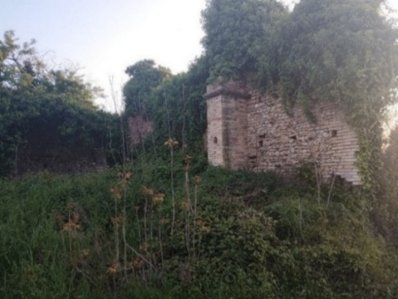
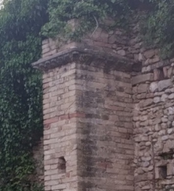
Dalle foto emerge con chiarezza che, ad oggi, lo stato di conservazione di questi ruderi non sia certo ottimale.
Nelle vicinanze noto la presenza del rivenditore di auto Murri, un cognome che, unitamente solo a quello dei Fattore, ho trovato associato ai Romagnoli (si veda Antonia Romagnoli o Murri vissuta nel ‘700 e sposata con Giovanni Simigliani (1729-1811) di Mozzagrogna). Un caso?
Sorprese finite? Ancora no.
In mezzo a quel cumulo di macerie ed erbacce che caratterizzano l’area, ecco che scorgo il volto di un piccolo angelo. Mi chino, alzo il manufatto, ed ecco quello che trovo: foto 1 e foto 2. Sembra essere la base - formata da quattro angeli - di una antica acquasantiera. Ritenendo di non doverla lasciare in mezzo a quelle macerie ed erbacce, la riporto a casa, le do una leggera spazzolata per poterla meglio ammirare e il giorno dopo, appena sveglio, avviso la Soprintendenza di Chieti. Qui di seguito le foto del reperto trovato (Fig. 2).
Nel pomeriggio mi chiama il Direttore che, oltre a ringraziarmi più volte e tracciare i possibili sviluppi, evidenzia l’importanza del manufatto. Dopo circa 20 giorni dal ritrovamento, mi richiama il Direttore dicendomi che l’area è di proprietà del Capitolo di Lanciano e che a breve sarei stato contattato dall’Arcidiocesi per la riconsegna.
Fig. 2 – Base aquasantiera del XV secolo
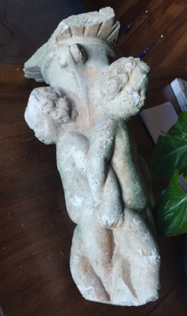
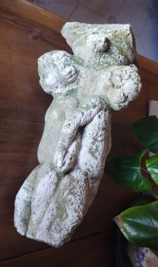
Il 22 maggio riconsegno il manufatto e scopro che nel frattempo la Soprintendenza ha anch’essa fatto un sopralluogo rinvenendo alcune delle parti mancanti (la base e parti del piatto) di quella che effettivamente era un’acquasantiera del 1400. Con grande piacere ho appreso che l’Arcidiocesi vorrebbe allestire una sezione Medievale all’interno del proprio Museo (già ricchissimo di tesori) con protagonista proprio la nostra acquasantiera. La vicenda è comunque ancora tutta da scrivere, magari anche attraverso azioni di recupero, tutela e valorizzazione dei ruderi della chiesa stessa. La speranza è che non finisca, come spesso accade, tutto nel dimenticatoio.
L’atto notarile del 1719 ( p. 1 - p. 2 ), viene riporto qui di seguito con una sua, sia pur parziale, traduzione.
{kind=link}
{kind=link}
Per una migliore comprensione del testo, ricordo che nei primi del ‘700 l’espressione si richiamano era da intendere come “dichiarano di discendere”. Il documento è storicamente rilevante e sembrerebbe tracciare le origini anche di Villa Andreoli, anch’essa probabilmente legata al capoluogo marchigiano. Si citano infatti un certo Andrea e Giovanni Marino, entrambi noti come “Andreone d’ancona alias andrioli”.
Fig. 3 – Immagini dell’atto notarile di Costanzo Silvestro Romagnoli, 1719
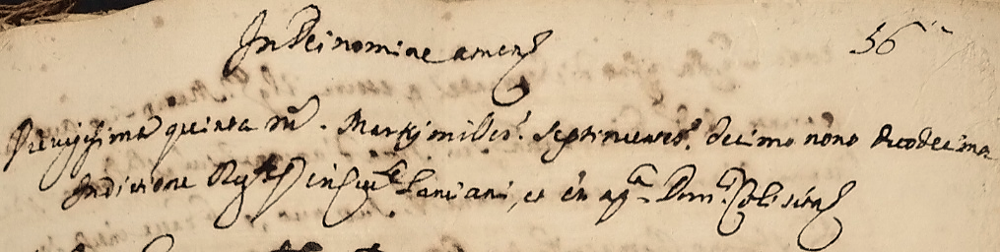
Nel nome di Dio, Amen Oggi, venticinque marzo mille settecento diciannove … …. Lanciano, …. Dom. Coli …
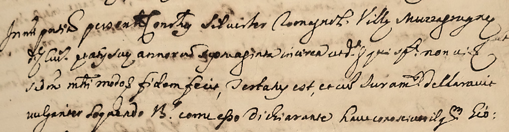
In mia presenza comparve Costanzo Silvestro Romagnoli, Villa Mozzagrogna di cui …. di anni settanta circa … …(spontaneamente)…., ma a me e in modo (senza costrizione) rese fede, ha testimoniato, e con giuramento dichiarato parlando in lingua volgare sta a me B. (Berardino) dichiarare di aver conosciuto il fu Giovanni
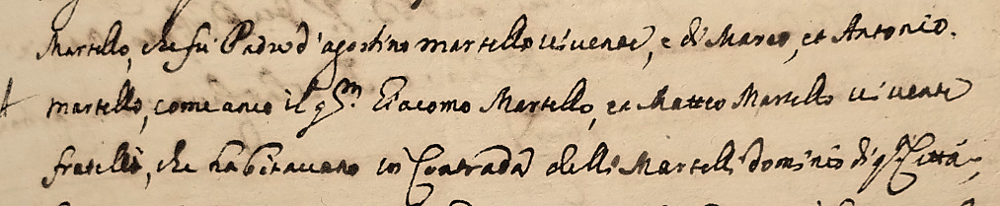
Martello, che fu Padre d’Agostino Martello vivente, e di Marco, e Antonio Martello, come (anco) il fu Giacomo Martello, e Matteo Martello vivente fratelli, che abitavano in Contrada delli Martelli dominio di questa città;
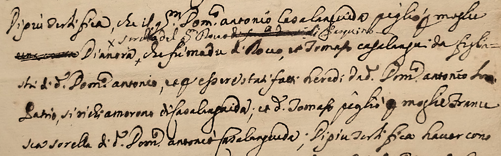
Di più certifica, che il fu Domenico Antonio Casalanguida pigliò moglie Dianora, sorella del fu Rocco Pasquino, che fu madre di Rocco, e Tomaso Casalanguida figlia- stri di Domenico Antonio, … stati fatti eredi del detto Domenico Antonio .. .. si richiamarono (dichiar. di discend.) di Casalanguida; e detto Tomaso pigliò moglie France- sca sorella di Domenico Antonio Casalanguida; Di più testifica aver cono-
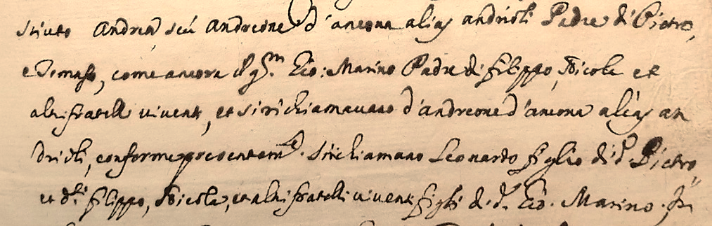
sciuto Andrea, seu (ovvero) Andreone d’ancona alias andrioli Padre di Pietro, e Tomaso, come ancora il fu Giovanni Marino Padre di Filippo, Nicola e altri fratelli viventi, e si richiamavano (dichiarano di discendere) d’andreone d’ancona alias an- drioli, conformepresente... si richiamano (dichiar. di discendere) Leonardo figlio di detto Pietro e detti Filippo, Nicola e altri fratelli viventi figli del detto Giovanni Marino; In-
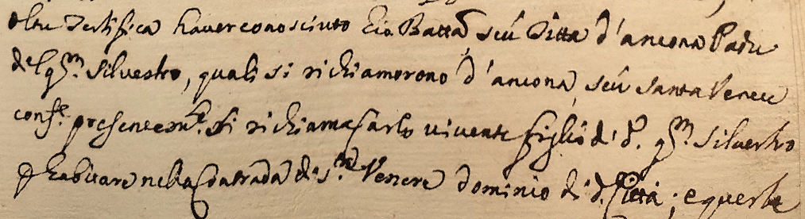
oltre testifica aver conosciuto Giovanni Battista, ossia detto d’ancona Padre del fu Silvestro, quali si richiamarono (dichiarano di discendere) d’ancona, ossia Santa Venere confinante presentamente. Si richiama (dich. di disc.) Carlo vivente, figlio del detto fu Silvestro ..abitare nella Contrada di Santa Venere dominio di detta Città; e queste
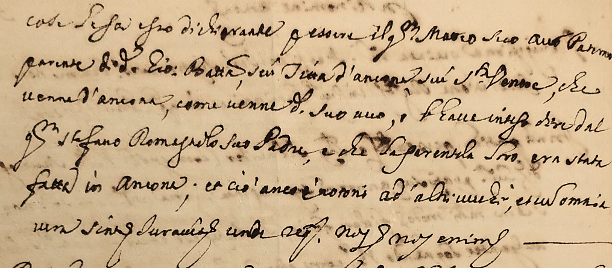
case. Se fa egli stesso dichiarante essere il fu Matteo suo avo (nonno) Paterno parente del detto Giovanni Battista, ossia detto d’ancona o anche Santa Venere, che venne d’Ancona, come venne detto suo avo (nonno), aver inteso dire dal fu Stefano Romagnolo suo Padre, e che la parentela loro era stata fatta in Ancona; e ciò ….. ad altri ….; et omnia …… Juramento rende …. --
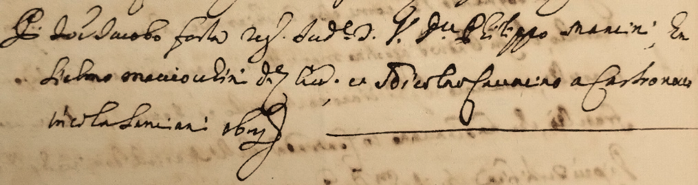
…… Jacopo Festa …. Filippo Mancini; .. Liborio Macciochini … e Nicola Cavacini di Castel Frentano ….Lanciano …. ------------
Riguardo alla traduzione fatta, pur in presenza di alcuni passaggi mancanti o poco chiari, essa restituisce efficacemente i principali contenuti analizzati e commentati in precedenza.
Considerata l’importanza del documento, è mia intenzione affidare la sua traduzione a personale sicuramente più esperto di me, in modo da ottenere una versione più dettagliata e precisa, anche per quanto riguarda le formule rituali in esso contenute. Del resto, colgo l’occasione per ribadire la natura in divenire del presente lavoro.
Capitolo 6ALCUNI APPROFONDIMENTI
Questo capitolo raccoglie le prime tracce lasciate dai Romagnoli in terra frentana.
Si inizia analizzando l’origine e la diffusione dei cognomi citati nell’atto notarile. Successivamente, grazie ai dati del catasto del 1618, unitamente a quelli dell’atto notarile stesso, vengono individuati i luoghi dei primi insediamenti. Segue un approfondimento riguardante il tema della discontinuità dei cognomi nei primi anni del ‘600 e le ipotesi che ne derivano, tra cui quella relativa all’origine di Villa Romagnoli. Infine, il capitolo si chiude con l’analisi del culto di Santa Venera, la santa menzionata nell’atto notarile che ha dato il nome all’antica contrada, oggi scomparsa, ma forse non del tutto dimenticata.
6.1 LE ANTICHE PARENTELE
Come anticipato, in questo paragrafo si approfondiscono l’origine e la diffusione dei cognomi citati nell’atto notarile del 1719: Martelli, Casalanguida, Pasquini, Andreoli, D’Ancona e Santavenere. Si tratta con buona probabilità di famiglie che, a vario titolo, furono legate ai Romagnoli tramite accordi, vicinanze e matrimoni.
Le informazioni sulla diffusione attuale dei cognomi sono state ricavate soprattutto da Cognomix.it , un portale non istituzionale che fornisce stime (utili come indicazioni di tendenza, ma non come dati censuari), integrando ove possibile con altre fonti e ricerche personali.
Il cognome Martelli ha un’origine antica: può rimandare al nome medievale Martel oppure a soprannomi legati al mestiere del fabbro e all’uso del martello ( martellus ). Oggi risulta ben presente anche nel territorio chietino e frentano, coerentemente con la sua ricorrenza nell’atto.
Casalanguida è un cognome tipicamente abruzzese e fortemente concentrato nella provincia di Chieti; la sua origine è verosimilmente toponomastica, cioè legata al paese omonimo.
Pasquini deriva da nomi personali come Pasquino o Pasquale, diffusi in passato, e presenta una distribuzione ampia; nel contesto frentano è comunque un cognome molto presente, quindi rilevante nella rete di relazioni locali.
Andreoli è un patronimico (da Andrea) e, pur essendo diffuso in Italia, nel nostro caso è interessante perché può incrociarsi con il tema, ricorrente nei documenti antichi, di soprannomi e identificazioni “alternative” (alias), che a volte anticipano o accompagnano la stabilizzazione dei cognomi.
Il cognome D’Ancona, oggi poco diffuso, è in genere interpretato come indicazione di provenienza dalla città di Ancona. È interessante notare come la sua distribuzione attuale sembri toccare anche aree legate a scali e rotte costiere: un elemento che, pur non essendo prova, è coerente con la natura “mobile” che spesso avevano le famiglie legate ai porti e ai traffici.
Santavenere, anch’esso raro a livello nazionale, risulta invece concentrato soprattutto in Abruzzo, con presenza anche nel chietino. Nel suo caso il collegamento più naturale è toponomastico/devozionale, legato al nome della contrada e del culto.
Naturalmente, non poteva mancare un richiamo al cognome Romagnoli. Le stime indicano una presenza significativa nel territorio chietino (con nuclei importanti tra Lanciano, Mozzagrogna e i comuni vicini) e una forte concentrazione complessiva nelle Marche e in Emilia-Romagna.
A questo si aggiunge un riscontro interessante dai dati disponibili su familysearch.org : nella provincia di Chieti tra 1700–1750 compaiono pochi individui Romagnoli, tutti riferibili a Mozzagrogna; nel cinquantennio successivo (1751–1800) il numero cresce sensibilmente e rimane quasi totalmente legato alla stessa area. Pur non essendo una prova definitiva, questo elemento è coerente con l’idea che, almeno nel chietino, Mozzagrogna rappresenti un nucleo di origine particolarmente importante per il cognome. Si potrebbe quindi ipotizzare che:
Il cognome Romagnoli, almeno per quanto riguarda la provincia di Chieti, possa aver avuto come nucleo di origine proprio la comunità di Mozzagrogna.
Per riassumere visivamente la presenza dei cognomi richiamati nell’atto del 1719, si riporta di seguito una tabella comparativa.
TAB. 4 – Distribuzione territoriale delle famiglie presenti nell’atto del 1719, anno 2025
| Italia | Abruzzo | Provincia di Chieti | Area AUF di Lanciano | Comune di Lanciano | |
|---|---|---|---|---|---|
| Martelli | 5.978 | 309 | 235 | 175 | 125 |
| Casalanguida | 121 | 89 | 78 | 66 | 58 |
| Pasquini | 3.592 | 341 | 294 | 215 | 144 |
| Andreoli | 4.562 | 188 | 67 | 57 | 38 |
| D'Ancona | 125 | 16 | 12 | 0 | 0 |
| Santa Venere | 94 | 81 | 16 | 2 | 2 |
| Romagnoli | 5.701 | 193 | 138 | 76 | 20 |
Fonte: elaborazioni su dati Cognomix, giugno 2025
Tra i cognomi elencati e rispetto alle diverse disaggregazioni territoriali, Romagnoli si posiziona per numerosità sempre sul podio, con la sola eccezione nel comune di Lanciano, dove è solo 5°.
6.2 I PRIMI INSEDIAMENTI NEL TERRITORIO FRENTANO
Per quanto riguarda l’area di primo insediamento dei Romagnoli nel territorio frentano, è possibile formulare alcune considerazioni e ipotesi facendo riferimento sia all’atto del 1719, che all’analisi dei beni rilevati nel catasto del 1618. La lettura del catasto non è sempre agevole e l’identificazione puntuale dei luoghi di residenza non risulta in tutti i casi certa.
Nel 1618 risultano censiti dieci “ Romagnolo/a ”: due abitavano nelle Ville (Matteo a Pietra Costantina e Francesco a Villa Cotellessa), due a Lanciano Vecchia (Antonio e Pasquino) e gli altri sei nel quartiere Borgo, che all’epoca comprendeva anche aree periferiche.
Dalla lettura dei beni catastali, emerge infatti che Simone abitava e aveva dei terreni nella contrada Santa Venere. Questo dato assume particolare rilievo, perché la contrada ricompare anche nell’atto del 1719. Anche Tommaso aveva terreni in detta contrada e risiedeva nella vicina Valle Cupa. A questi si potrebbe forse aggiungere Giovanni Battista che, qualora fosse il nonno del fu Giovanni Battista presente nell’Atto notarile del 1719, era anch’egli un “ Santa Venere ” che abitava nell’omonima contrada. Dubbia è la localizzazione esatta di Andrea e Giuseppe di Giovanni Marino, mentre sicuramente Francesca abitava nel quartiere Borgo.
Per comodità si ripropone, con piccole integrazioni, la tabella precedentemente esposta riguardante i “Romagnolo/a” censiti durante il catasto di Lanciano del 1618 (Tabella 5).
In conclusione, non si evidenzia nel 1618 una distribuzione dei “Romagnolo/a” particolarmente concentrata su una specifica zona di Lanciano. È plausibile che, già prima del 1618, l’antica contrada Santa Venere rappresentasse uno dei principali nuclei di insediamento.
Del resto, nel 1719 in questa contrada risiedeva ancora Carlo, figlio del “ Santa Venere ” Giovanni Battista. Inoltre, Non si può inoltre escludere che Matteo, residente nel 1618 a Villa Pietra Costantina, avesse in precedenza abitato nella stessa contrada, data la parentela dichiarata con Giovanni Battista.
Tab. 5 – I capifamiglia “Romagnolo/a” nel catasto del 1618
| NOME DEL CAPOFAMIGLIA | QUARTIERE / VILLA | ESATTA LOCALITÀ |
|---|---|---|
| Antonio | Lanciano Vecchia | Idem (?) |
| Pasquino | Lanciano Vecchia | Idem |
| Francesca | Borgo | Idem |
| Andrea | Borgo | (?) |
| Giovanni Battista di Pietro | Borgo | S. Venere (?) |
| Giuseppe di Giovanni (Marino) | Borgo | (?) |
| Simone | Borgo | S. Venere |
| Tomasso | Borgo | Valle Cupa |
| Matteo | Villa Pietra Costantina | Idem (?) |
| Francesco | Villa Cotellessa | Idem |
Fonte: elaborazioni su dati Archivio Storico di Lanciano
6.3 Discontinuità dei cognomi e origini di Villa Romagnoli
Come anticipato, la tesi di un trasferimento dei Romagnoli da Lanciano a Villa Mozzagrogna, emersa dal confronto dei due catasti onciari, potrebbe non essere del tutto scontata o potrebbe richiedere una parziale revisione. L’analisi dell’atto notarile di Silvestro consente infatti di formulare un’ipotesi ulteriore che, senza escludere la precedente, ne amplia la prospettiva.
Occorre ricordare che nel XVI secolo i cognomi non erano ancora pienamente stabilizzati. Dopo il Concilio di Trento (1545–1563), la Chiesa impose l’obbligo di registrare un cognome fisso nei registri parrocchiali; tuttavia, per alcuni decenni continuarono a convivere cognomi, soprannomi e indicazioni di provenienza.
Nell’atto di Silvestro, oltre alle famiglie “ Martello ” e “ Casalanguida ”, compaiono altri tre nuclei familiari senza che venga mai citato il cognome Romagnoli. I membri di tali famiglie sono identificati con il nome seguito da due appellativi preceduti da seu (“ossia”) o alias (“ovvero”), formule che non accompagnano invece i cognomi Martello e Casalanguida. Questo dettaglio è rilevante, poiché potrebbe indicare l’uso di soprannomi o denominazioni identificative piuttosto che di cognomi pienamente consolidati.
Non è quindi da escludere che il cognome originario di questi nuclei fosse Romagnoli e che “ d’Ancona ”, “ Andrioli ” o “ Santa Venere ” rappresentassero appellativi aggiuntivi, utilizzati per distinguere rami della stessa parentela.
Un elemento particolarmente significativo riguarda la coincidenza dei nomi. Escludendo Martello e Casalanguida, i capifamiglia citati nell’atto del 1719 sono Andrea, Giovanni Marino, Giovanni Battista e Matteo; a essi si può aggiungere Rocco Pasquino. Tutti questi nomi compaiono anche tra i “ Romagnolo/a ” censiti nel catasto del 1618. Una coincidenza troppo sistematica per essere considerata casuale.
Per coloro che risultavano già deceduti nel 1719 è plausibile che si trattasse delle stesse persone menzionate nel 1618 (come Giovanni Marino e Matteo); per quelli ancora in vita, è verosimile che fossero discendenti – forse nipoti – dei precedenti.
In sintesi, si potrebbe ipotizzare che alcuni dei “ Romagnolo ” registrati come tali nel catasto del 1618 abbiano nel corso degli anni cambiato cognome.
È possibile, ad esempio, che “ Andrea Romagnolo ” sia l’antenato di “ Andrea, seu Andreone d’Ancona, alias Andrioli ”, da cui il cognome Andreoli oggi diffuso nella zona e forse legato alla nascita dell’attuale contrada di Villa Andreoli. Analogamente, il nome “ Rocco Pasquino ” richiama la successiva Contrada Pasquini; significativo è inoltre che nel catasto del 1618 l’unico Pasquino registrato risulti “ Pasquino Romagnolo ”.
Non si può tuttavia escludere che entrambe le dinamiche abbiano agito contemporaneamente: da un lato cambiamenti o trasformazioni di cognome, dall’altro un trasferimento effettivo di parte della famiglia verso l’area che oggi conosciamo come Villa Romagnoli, forse anche in relazione a fasi di ripopolamento successive a pestilenze o eventi sismici.
Un’ipotesi più radicale è che l’insediamento di Villa Romagnoli abbia avuto origine principalmente dalla discendenza di Matteo. Il solo nipote Silvestro generò 35 bisnipoti di cognome Romagnoli, senza considerare le linee femminili; numeri che, da soli, potrebbero spiegare l’ampia diffusione del cognome nel territorio circostante.
Nel catasto del 1618 compaiono inoltre denominazioni come Paolo di Francesco D’Ancona e altri soggetti indicati come “Anconitano”. La presenza di tali appellativi non contraddice quanto sopra, ma rafforza l’idea di una fase storica in cui provenienze, soprannomi e cognomi convivevano ancora in modo fluido.
Ulteriore conferma della mobilità e della sovrapposizione dei cognomi proviene da due atti notarili del Settecento che menzionano residenti di Villa Mozzagrogna come “ Romagnoli alias Fattore ”, attestando un legame stretto tra i due cognomi, entrambi storicamente molto diffusi nella frazione.
Solo un’analisi sistematica degli atti notarili tra la metà del Cinquecento e la metà del Seicento potrà chiarire in modo definitivo l’evoluzione dei cognomi, i possibili cambiamenti di denominazione e la nascita dell’attuale Villa Romagnoli.
Del resto, anche nel camposanto di Mozzagrogna e Santa Maria Imbaro, lungo il sentiero principale, è ben visibile una tomba con la scritta “I ROMAGNOLI – 1568”. Una data coerente con le informazioni sopra riportate. Non mi meraviglierebbe, infatti, se l’atto notarile più antico relativo ad un certo “Romagnolo” risalisse proprio al 1568.
Ricordo che la tomba sopra richiamata fu fatta erigere dal padre (o forse dal nonno) del colonnello dell’Aeronautica Militare Rodolfo Romagnoli a cui è stata intitolata la scuola materna di Villa Romagnoli per la sua grande generosità nei confronti dei bambini e ragazzi del paese.
6.4 UNA SANTA DIMENTICATA
Nel paragrafo precedente è emersa la complessità legata all’origine di alcuni cognomi; altrettanto enigmatica appare la figura della santa menzionata nell’atto notarile del 1719. Chi era infatti Santa Venera o Veneranda, che ha dato il nome alla contrada e ai suoi abitanti? Tra questi vi erano probabilmente D’Ancona e Romagnoli, ma anche i cosiddetti “ La Fatturie ”, legati alla famiglia De Riseis.
Le varianti del nome – Venere, Venera, Veneranda – non devono sorprendere: rientrano nei naturali processi di evoluzione linguistica. A Lanciano la chiesa era indicata come “Santa Venera” o “Veneranda”, ma localmente era nota anche come “Santa Venula”. Nell’atto del 1719 compare la forma “ Santa Venere ”, così come in altri documenti notarili e nel catasto del 1618. La pluralità delle denominazioni testimonia una tradizione radicata ma non rigidamente fissata.
L’identità della santa non è univoca. Nella tradizione cattolica si sovrappongono almeno tre figure con questo nome: una venerata a Roma nel II secolo e altre due legate all’area dell’attuale Turchia, tra il II e il X secolo. In Italia il culto è relativamente circoscritto, con presenze significative nel Sud – soprattutto in Sicilia – e in alcune zone delle Marche. Nelle aree adriatiche il culto appare talvolta connesso a influssi bizantini e alla presenza di comunità slave giunte in Italia tra il XV e il XVI secolo.
Anche in Abruzzo, oltre a Lanciano, la santa era venerata a Francavilla, presso l’antica chiesa di San Franco (oggi Santa Maria Maggiore), dove esisteva una cappella dedicata a Santa Venera e legata a presenze slave nell’area costiera.
Nelle Marche si riscontrano diversi centri in cui il culto è attestato, con origini talvolta latine, talvolta bizantine: Pesaro (frazione Santa Veneranda), Fermignano, Montemarciano e Ascoli Piceno. In alcuni casi sopravvivono testimonianze artistiche quattrocentesche, come l’ affresco raffigurante il martirio della santa nella chiesa di Santa Maria in Piazza a Loro Piceno: immersa in una tinozza di olio bollente, in atto di preghiera, mentre i carnefici alimentano il fuoco. Un’immagine simile (dentro la tinozza di olio bollente), la troviamo anche in Molise, ad Agnone, nella chiesa di San Vincenzo (Fig. 4).
Fig. 4 – Affresco di Santa Venera ad Agnone (XVI Sec.)
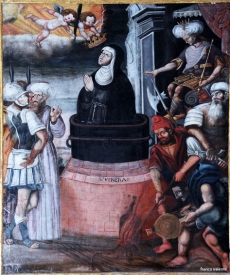
Fonte: foto di Franco Valente
Per quanto riguarda Lanciano, la documentazione storica attesta con chiarezza la vitalità della chiesa e della contrada di Santa Venere tra il XV e il XVII secolo. Un testamento del 1490 cita la chiesa tra i beneficiari di lasciti; un documento del 1591 la include tra i benefici ecclesiastici cittadini; tra il 1550 e il 1649 numerosi atti notarili fanno riferimento alla “ contrada Santa Venere ”. Nel catasto del 1618 è indicata come “ Santa Venere Chiesa Vecchia Fora ”. Nel 1921 l’edificio era ancora riconosciuto di interesse storico e dichiarato Monumento Nazionale.
Fig. 5 – Santa Venera, luoghi di culto, stato attuale e focus area Etna
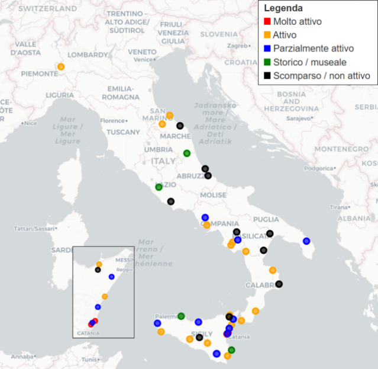
Fonte: elaborazioni, 2025
Le origini del culto a Lanciano potrebbero dunque essere latine oppure bizantine; entrambe le ipotesi restano plausibili. Collegarlo direttamente ai Romagnoli o ai D’Ancona sarebbe azzardato, ma la ricorrenza del toponimo nei documenti che riguardano le prime generazioni insediate nel territorio frentano suggerisce che la contrada rappresentasse un nucleo significativo per la comunità dell’epoca.
L’analisi dei luoghi di culto dedicati a Santa Venera, rappresentata nella mappa sopra esposta, mostra una diffusione prevalentemente meridionale – con particolare concentrazione in Sicilia – ma anche alcune presenze nell’area adriatica e nelle Marche. Tra queste, Montemarciano risulta di particolare interesse per la sua vicinanza ad Ancona.
Chi volesse approfondire ulteriormente può consultare uno studio da me svolto dedicato alla santa, disponibile sulle piattaforme Zenodo e ReserchGate .
Capitolo 7LA CITTÀ MADRE
7.1 LE RADICI STORICHE E CULTURALI DELLA CITTÀ DORICA
Forse non tutti sanno che tra le radici più antiche di Ancona si nasconda un legame diretto con il mondo greco. La distanza in linea d’aria tra il capoluogo marchigiano ed Atene è di circa 800 km ma, a quanto pare, secondo gli antichi naviganti greci questi non erano poi così tanti.
Ancona fu infatti fondata da coloni greci, precisamente dai Dori provenienti da Siracusa, intorno al 387 a.C.
Il nome stesso di Ancona deriva dalla parola greca Ἀ γκών ( Ankón ), che significa “gomito” o “curva”, in riferimento alla forma del promontorio su cui sorge e della sua baia naturale, da cui il famoso porto.
Per questo motivo, Ancona è tuttora chiamata anche “la città dorica”, proprio in riferimento al popolo greco dei Dori. Diverse tracce di questa fondazione e identità sono inoltre rimaste nel tessuto urbano, nelle tradizioni e persino nei simboli storici della città.
Oltre alla fondazione greca, Ancona mantenne per secoli legami commerciali e culturali con il mondo ellenico e orientale: era una delle principali porte marittime italiane verso l’Oriente e sin dal Medioevo ospitava una numerosa comunità greca. Secondo gli storici, Ancona fu inoltre una città che mantenne a lungo una forte identità ellenica anche dopo la romanizzazione della regione.
Se Ancona è la prima città documentata dei Romagnoli frentani, il suo passato dorico rappresenta forse l’orizzonte più remoto entro cui collocare simbolicamente le nostre radici.
Nell’ambito di questa ipotesi è possibile quindi immaginare un primo viaggio dalla Grecia a Siracusa, un secondo da Siracusa ad Ancona e, infine, da Ancona a Lanciano.
7.2 L’IDENTITÀ RELIGIOSA E L’ONOMASTICA FAMILIARE
Accanto alle radici storiche e culturali, Ancona conserva una tradizione religiosa che ha inciso profondamente sulla vita della città. I culti legati a figure come Santo Stefano e San Costanzo sembrano riflettersi nelle scelte onomastiche più antiche dei Romagnoli.
Il nome Stefano, padre di Silvestro e di Leonardo, si inserisce coerentemente nella tradizione religiosa anconetana.
Ad Ancona, la devozione verso Santo Stefano ha infatti radici antichissime: secondo la tradizione, già nel IV–V secolo una basilica paleocristiana dedicata al protomartire fungeva da prima cattedrale della città. I resti di questa struttura sono oggi visibili sotto la chiesa romanica di Santa Maria della Piazza, edificata tra XI e XII secolo sulle sue fondamenta. Altre fonti medievali menzionano una cattedrale dedicata a Stefano sul colle Astagno, fuori dalle mura, anch’essa scomparsa dopo il XII secolo.
La continuità del culto è inoltre attestata anche nei secoli successivi da altre chiese intitolate a Santo Stefano nell’area anconetana, come la parrocchia di Montesicuro e la chiesa di Santo Stefano di Osimo, ancora oggi luoghi di culto attivi. Queste dedicazioni successive confermano come il nome di Stefano fosse radicato e ampiamente riconosciuto nella memoria religiosa del territorio.
Anche Costanzo, il secondo nome di Silvestro, richiama figure di santi venerati come protettori dei viaggiatori e pellegrini: una tradizione perfettamente coerente con l’identità di una città portuale come Ancona.
L’uso congiunto di nomi come Stefano e Costanzo può essere letto, più che come prova diretta, come un elemento coerente con la cultura religiosa e marittima della città d’origine.
Accanto alle radici storiche e culturali, Ancona conserva una tradizione religiosa che ha inciso profondamente sulla vita della città. I culti legati a figure come Santo Stefano e San Costanzo sembrano riflettersi nelle scelte onomastiche più antiche dei Romagnoli.
Infatti il nome Stefano, padre di Silvestro e del nostro Leonardo, potrebbe non essere stato scelto a caso.
Ad Ancona, la devozione verso Santo Stefano ha infatti radici antichissime: secondo la tradizione, già nel IV–V secolo una basilica paleocristiana dedicata al protomartire fungeva da prima cattedrale della città. I resti di questa struttura sono oggi visibili sotto la chiesa romanica di Santa Maria della Piazza, edificata tra XI e XII secolo sulle sue fondamenta. Altre fonti medievali menzionano una cattedrale dedicata a Stefano sul colle Astagno, fuori dalle mura, anch’essa scomparsa dopo il XII secolo.
La continuità del culto è inoltre attestata anche nei secoli successivi da altre chiese intitolate a Santo Stefano nell’area anconetana, come la parrocchia di Montesicuro e la chiesa di Santo Stefano di Osimo, ancora oggi luoghi di culto attivi. Queste dedicazioni successive confermano come il nome di Stefano fosse radicato e ampiamente riconosciuto nella memoria religiosa del territorio.
Anche Costanzo, il secondo nome di Silvestro, richiama figure di santi venerati come protettori dei viaggiatori e pellegrini: una tradizione perfettamente coerente con l’identità di una città portuale come Ancona.
L’uso congiunto di nomi come Stefano e Costanzo, dunque, non appare come una semplice consuetudine onomastica, ma piuttosto come un legame simbolico con la storia religiosa e marittima della terra d’origine.
7.3 DOCUMENTI E GENEALOGIA
Accertata l’origine anconetana, le ricerche si sono concentrate sulla città dorica. Presso il suo Archivio Storico è stato consultato il Catalogo dei morti della Città di Ancona registrati dal cappellano protempore della Santissima Annunziata (1554–1589) .
Nel documento compaiono diversi “ D’Ancona ” e “ Romagnolo/a ” deceduti tra il 1554 e il 1589. Di ciascun defunto sono riportati nome, cognome, data di morte, parrocchia e luogo di sepoltura. Nelle tabelle seguenti si indicano data, nominativo e pagina del registro; le ulteriori informazioni sono disponibili nell’ archivio digitale . La trascrizione potrebbe presentare alcune imprecisioni.
Dalla Tabella 6 si ricava che nel periodo considerato si registrano 33 decessi di “Romagnolo/a” su un totale stimato di circa 6.720 morti complessive, pari a un’incidenza di circa 5 ogni 1.000.
Colpisce in particolare la presenza di un Matteo Romagnolo, deceduto nel 1554, il più antico tra quelli registrati. Non conoscendone l’età, non è possibile stabilire un collegamento diretto con il Matteo censito nel 1618 a Pietra Costantina; potrebbe trattarsi del nonno, di un avo ancora precedente o di un omonimo. Tuttavia, la data colloca il cognome nel tessuto anconetano già a metà Cinquecento.
Un elemento significativo è che i “Romagnolo/a” compaiono fin dal primo anno censito (1554), circostanza che lascia supporre una presenza precedente alla registrazione disponibile.
Più numerosi risultano invece i D’Ancona nel medesimo periodo: i decessi registrati (Tabella 7) sono 57, con un’incidenza di circa 8,5 ogni 1.000.
Tra i nominativi compaiono Stefano (1578), due Giovanni Battista (1584) e un Silvestro di Silvestro (1588), nomi che ricorrono anche nella genealogia dei Romagnoli frentani.
Un dato rilevante riguarda la diversa cronologia di comparsa: mentre i “Romagnolo/a” sono presenti fin dal 1554, il primo D’Ancona registrato risale al 1574, vent’anni dopo. Nel periodo 1554–1573 si contano infatti 8 decessi di “Romagnolo/a” e nessuna registrazione di D’Ancona. Questo suggerisce che, almeno nei registri conservati, i Romagnoli risultino documentati prima dei D’Ancona e verosimilmente già presenti anche prima del 1554.
Tab. 6 – Decessi 1554-1589 ad Ancona dei “Romagnolo/a”
| PAG. | DATA MORTE | SESSO | NOME | COGNOME |
|---|---|---|---|---|
| 291 | 24/06/1554 | M | Matteo | Romagnolo |
| 7 | 01/10/1566 | M | Antonii | Romagnolo |
| 295 | 31/05/1569 | F | Maria Angela | Romagnola |
| 9 | 02/06/1569 | F | Agostina di Iacomo | Romagnolo |
| 9 | 24/07/1569 | M | Alessandro di Giovanni | Romagnolo |
| 239 | 17/09/1570 | F | Jsabetta maggiore di Iacomo | Romagnolo |
| 117 | 02/02/1571 | M | Domenico | Romagnolo |
| 189 | 04/06/1573 | F | Giulia | Romagnola |
| 356 | 30/04/1575 | M | Pietro | Romagnolo |
| 119 | 28/09/1575 | F | Diamante di Ser.. Giovanni | Romagnolo |
| 88 | 15/05/1576 | F | Catterina moglie di Fabritio | Romagnolo |
| 155 | 03/01/1577 | M | Franceschino di Giovan Domenico | Romagnolo |
| 198 | 16/11/1577 | M | Giovanni | Romagnolo |
| 306 | 31/03/1580 | F | Martina maggiore di Virgilio | di Romagna |
| 360 | 22/03/1581 | M | Pier Gentile figlio di Giovanni Maria | Romagnolo |
| 344 | 26/09/1581 | M | Ottaviano | Romagnolo |
| 209 | 03/03/1583 | F | Gabriela | Romagnola |
| 384 | 29/06/1583 | F | Suriana maggiore di Marino | Romagnolo |
| 385 | 26/11/1583 | M | Santino | Romagnolo |
| 31 | 23/01/1584 | M | Antonio figlio di Stefano | Romagnolo |
| 277 | 23/02/1584 | F | Lucia | Romagnola |
| 99 | 05/05/1584 | F | Catterina figlia di Pietro | Romagnolo |
| 64 | 29/08/1584 | M | Battista figlio di Fabritio | Romagnolo |
| 65 | 27/02/1585 | M | Bartolomeo | Romagnolo |
| 315 | 22/09/1585 | M | Mattia figlio di Alessandro | Romagnolo |
| 386 | 21/02/1586 | M | Silvestro figlio di Battista | Romagnolo |
| 142 | 29/02/1586 | F | Elena maggiore di Giovanni Battista | Romagnolo |
| 373 | 02/04/1586 | M | Rombo | Romagnolo |
| 251 | 24/04/1586 | M | Iacomo | Romagnolo |
| 67 | 14/04/1587 | F | Bernarda | Romagnola |
| 229 | 27/06/1589 | F | Grazia di Domenico | Romagnolo |
| 41 | 20/07/1589 | F | Apollonia di Marco | Romagnolo |
| 390 | 20/07/1589 | F | Simone | Romagnolo |
Fonte: elaborazioni su dati dell’Archivio di Stato di Ancona
Tab. 7 – Decessi 1554-1589 ad Ancona dei “D’Ancona”
| PAG. | DATA MORTE | SESSO | NOME | COGNOME |
|---|---|---|---|---|
| 118 | 01/07/1574 | M | Domenico | D'Ancona |
| 301 | 07/03/1576 | M | Marco di Nicco | D'Ancona |
| 302 | 08/05/1576 | F | Mattia di Matteo | D'Ancona |
| 302 | 07/08/1576 | F | Madalena di Berardo | D'Ancona |
| 382 | 24/11/1578 | M | Stefano figlio di | D'Ancona |
| 202 | 18/09/1579 | M | Guidobaldo figlio di Gismondo | D'Ancona |
| 361 | 13/04/1582 | M | Pier Simone figlio di Ascanio | D'Ancona |
| 123 | 09/06/1582 | F | Dionara figlio di Pietro | D'Ancona |
| 309 | 25/07/1582 | M | Mattio Gaeta | D'Ancona |
| 26 | 10/08/1582 | M | Alessandro fachino | D'Ancona |
| 63 | 26/05/1583 | M | Battista di Iacomo | D'Ancona |
| 29 | 01/08/1583 | M | Antonio figlio di Simone | D'Ancona |
| 248 | 07/08/1583 | M | Iacomo figlio di Pellegrino | D'Ancona |
| 29 | 09/08/1583 | M | Agostino figlio di Santino | D'Ancona |
| 384 | 14/08/1583 | F | Stefana figlia di Giovanni Battista | D'Ancona |
| 30 | 25/08/1583 | M | Alessandro figlio di Cenaro | D'Ancona |
| 249 | 13/03/1584 | F | Isabetta figlia di Girolamo | D'Ancona |
| 215 | 09/08/1584 | M | Giovanni Battista figlio di Cristofaro | D'Ancona |
| 164 | 15/08/1584 | M | Francesco Spaccalegna | D'Ancona |
| 215 | 22/09/1584 | M | Giovanni Battista figlio d'Iseppe | D'Ancona |
| 365 | 06/10/1584 | M | Pietro figlio di Alessandro | D'Ancona |
| 165 | 09/10/1584 | F | Francesca | D'Ancona |
| 64 | 11/10/1584 | M | Bartolomeo figlio d'Ercole | D'Ancona |
| 279 | 12/10/1584 | F | Lucia maggiore di Nicolò | D'Ancona |
| 250 | 27/10/1584 | M | Iseppe figlio d'Antonio | D'Ancona |
| 33 | 05/11/1584 | M | Agostino figlio di Nicolò | D'Ancona |
| 65 | 15/05/1585 | M | Bartolomeo figlio di Nobile | D'Ancona |
| 34 | 21/08/1585 | F | Agnese | D'Ancona |
| 280 | 04/02/1586 | M | Luca di Matteo | D'Ancona |
| 220 | 19/02/1586 | M | Giovanni figlio di Lucio | D'Ancona |
| 127 | 02/12/1586 | M | Domenico Beccaro | D'Ancona |
| 396 | 31/12/1586 | M | Tomaso figlio di Marco | D'Ancona |
| 387 | 29/01/1587 | M | Santi | D'Ancona |
| 369 | 14/03/1587 | F | Paola maggiore di Girolamo | D'Ancona |
| 225 | 23/08/1587 | F | Giovanna di Matteo | D'Ancona |
| 320 | 28/08/1587 | F | Madalena di Simone | D'Ancona |
| 320 | 12/09/1587 | F | Margarita maggiore di Zaneoto | D'Ancona |
| 69 | 19/09/1587 | M | Bartolomeo d'Eusebio | D'Ancona |
| 346 | 29/09/1587 | M | Orazio di Marcello | D'Ancona |
| 226 | 14/10/1587 | F | Giovanna di Girolamo | D'Ancona |
| 129 | 28/10/1587 | M | Domenico D'Alessandro | D'Ancona |
| 39 | 07/11/1587 | M | Antonio di Cristofaro | D'Ancona |
| 337 | 07/11/1587 | M | Narduccio D'Antonio | D'Ancona |
| 69 | 20/11/1587 | F | Bartolomea di Michele | D'Ancona |
| 172 | 30/11/1587 | F | Faustina D'Alessandro | D'Ancona |
| 136 | 26/12/1587 | F | Palarrina di Pietro Matteo | D'Ancona |
| 40 | 31/12/1587 | M | Agostino di Cristofaro | D'Ancona |
| 389 | 30/06/1588 | M | Silvestro di Silvestro | D'Ancona |
| 286 | 19/05/1589 | M | Lorenzo di Mengo | D'Ancona |
| 325 | 22/05/1589 | F | Menica | D'Ancona |
| 255 | 10/08/1589 | F | Isabetta di Gasparino | D'Ancona |
| 71 | 29/08/1589 | F | Bartolomea d'Jseppe | D'Ancona |
| 233 | 05/09/1589 | F | GiovanMaria di Lorenzo | D'Ancona |
| 175 | 17/10/1589 | M | Falsipio di Pietro | D'Ancona |
| 131 | 18/10/1589 | F | Diana moglie di Vincenzo | D'Ancona |
| 70 | 11/12/1589 | M | Bianio D'Angelo | D'Ancona |
| 41 | 15/12/1589 | M | Ambrogio D'Antonio | D'Ancona |
Fonte: elaborazioni su dati dell’Archivio di Stato di Ancona
Altresì interessante è l’elenco dei defunti “ Romagnolo/a ” nel decennio successivo (1590–1599), riportato in forma sintetica nella Tabella 8.
Tra di essi si segnala ad esempio Giovanni Battista di Michelangelo, deceduto nel 1591.
La presenza, accanto alla forma stabilizzata “ Romagnolo/a ”, anche della denominazione “ di Romagna ” potrebbe indicare situazioni differenti: nel primo caso un cognome ormai radicato e consolidato nel territorio anconetano; nel secondo una possibile indicazione di provenienza geografica ancora recente. Non si può quindi escludere che sotto la denominazione “di Romagna” si nascondano individui o famiglie giunti in città in epoca più tarda rispetto ai “Romagnolo/a” già documentati dalla metà del Cinquecento.
Tab. 8 – Decessi 1590-1599 ad Ancona dei “Romagnolo/a”
| PAG. | DATA MORTE | SESSO | NOME | COGNOME |
|---|---|---|---|---|
| 184 | 28/07/1590 | F | Iacoma maggiore del fu Lorenzo | Romagnolo |
| 232 | 01/09/1590 | M | Mattia maggiore del fu Francesco | Romagnolo |
| 205 | 18/03/1591 | M | Lucrezia maggiore di Giovanni | Romagnolo |
| 38 | 28/03/1591 | M | Bedino | Romagnolo |
| 9 | 27/04/1591 | F | Aurelia maggiore d'Alaisi | Romagnolo |
| 279 | 19/05/1591 | M | Piero Galiota | di Romagna |
| 66 | 24/05/1591 | F | Catt.na di Domenico | Romagnolo |
| 151 | 20/06/1591 | M | Giovanni di Lorenzo | Romagnolo |
| 207 | 21/06/1591 | F | Lucia maggiore del fu Baldo | Romagnolo |
| 152 | 13/07/1591 | M | Giovanni Battista di MichelAngelo | Romagnolo |
| 313 | 24/09/1591 | M | Tomaso della Serra | di Romagna |
| 71 | 14/10/1591 | F | Casandra | Romagnola |
| 156 | 19/03/1592 | M | Giorgio del fu Antonio | Romagnolo |
| 157 | 07/04/1592 | M | Guglielmo di Vincenzo | Romagnolo |
| 302 | 24/05/1592 | F | Selvaggia di Domenico | Romagnolo |
| 302 | 09/06/1592 | F | Simona di Francesco | Romagnolo |
| 212 | 16/09/1592 | F | Lucia maggiore del fu Tomaso | Romagnolo |
| 213 | 23/11/1592 | F | Lucrezia | Romagnola |
| 242 | 06/01/1593 | M | Mengo | Romagnolo |
| 304 | 14/01/1593 | M | Santino del fu Martino | di Romagna |
| 245 | 07/07/1593 | F | Margarita | Romagnola |
| 131 | 15/03/1595 | F | Fiammetta del fu Giovanni Maria | Romagnolo |
| 26 | 26/10/1595 | F | Angelica magg del fu Alessandro | Romagnolo |
| 108 | 22/06/1598 | F | Elena del fu Giovanni Braga | Romagnolo |
Fonte: elaborazioni su dati dell’Archivio di Stato di Ancona
Anche per il decennio 1590–1599, le informazioni complete su parrocchie e luoghi di sepoltura sono disponibili nell’ archivio digitale , dove è consultabile anche l’elenco integrale dei D’Ancona.
Dal confronto emerge una differenza significativa nella frequenza delle morti registrate: mentre i decessi dei “Romagnolo/a” ammontano a 23 casi (circa 6 ogni 1.000), quelli dei D’Ancona raggiungono quota 127 (oltre 33 ogni 1.000).
Negli ultimi decenni del ‘500 si registra quindi una presenza ben più marcata dei D’Ancona rispetto ai “Romagnolo/a” .
Il cognome D’Ancona potrebbe essere stato uno dei più diffusi nel capoluogo marchigiano.
Se le origini del cognome “Romagnolo/a” rimandano con chiarezza alla terra di Romagna, merita invece un ulteriore approfondimento quello dei “D’Ancona”, che rappresentano i più stretti e antichi parenti documentati dei Romagnoli frentani.
Il cognome D’Ancona è verosimilmente di origine toponomastica: indica un radicamento familiare nella città di Ancona, dove “D’Ancona” significa letteralmente “di Ancona”. Questo tipo di denominazione si diffuse nel Medioevo e in età moderna per identificare famiglie stabilmente inserite nel tessuto urbano, spesso come segno di appartenenza e prestigio. A ciò contribuì anche il Concilio di Trento (1563), che rese obbligatoria la registrazione stabile dei cognomi nei registri parrocchiali.
Considerata la natura portuale della città, non è da escludere una matrice mercantile per alcuni nuclei familiari, mentre l’ipotesi di un’origine ebraica, talvolta suggerita in letteratura, resta al momento priva di conferme documentali specifiche.
In conclusione, mentre il cognome “Romagnolo/a” rimanda con chiarezza alla regione storica della Romagna, il cognome D’Ancona riflette una storia di radicamento urbano nella città marchigiana. Entrambi testimoniano percorsi storici distinti ma intrecciati nella genealogia dei Romagnoli frentani.
7.4 LA CITTÀ MADRE E L’IDENTITÀ ROMAGNOLA
Ancona non è oggi una città della Romagna. Tuttavia, a questo punto, è necessario chiarire un aspetto finora rimasto in sospeso: quale Romagna dobbiamo considerare? Quella attuale, oppure quella di cinque secoli fa?
La domanda può essere formulata in modo più diretto:
Ancona ha avuto mai a che fare con la Romagna?
I confini odierni non coincidono con quelli del passato. L’Italia centrale è stata per secoli un territorio mobile e conteso: prima tra Longobardi e Bizantini, poi tra signorie locali e Stato della Chiesa.
Le mappe medievali e rinascimentali (Fig. 6) mostrano come, per lunghi periodi, Ancona abbia condiviso con l’attuale Romagna l’appartenenza allo Stato Pontificio (per una mappa ancora più esplicita si veda il seguente link ). Un legame amministrativo che, pur non definendo da solo un’identità, contribuiva a creare una certa continuità territoriale e politica.
{kind=link}
Fig. 6 – Mappe Italia Centrale, Anno 1000 e 1500 circa
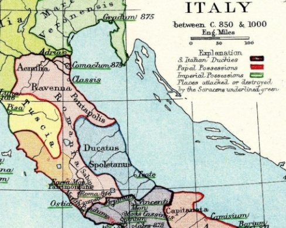
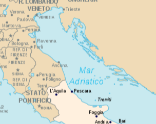
Fonte: Wikimedia Commons – Immagini di Pubblico Dominio
Particolarmente significativo è il contesto degli inizi del Cinquecento. In quegli anni Cesare Borgia, figlio di papa Alessandro VI, tentò di costruire un grande stato nell’Italia centrale, il cosiddetto Ducato di Romagna. Per un breve ma intenso periodo, i suoi domini circondarono Ancona, estendendosi anche a sud della città e inserendola di fatto in un’orbita politico-territoriale romagnola.
Alla luce di questo scenario, l’idea che Ancona potesse essere percepita come parte di un’area romagnola non appare impropria .
Ciò che oggi risulta geograficamente forzato, in quel contesto storico poteva essere del tutto plausibile.
Le conquiste borgiane aprono inoltre un’ulteriore ipotesi: la presenza dei “Romagnolo/a” nel capoluogo marchigiano potrebbe essere collegata a quei movimenti di uomini e famiglie che seguirono le dinamiche militari, amministrative ed economiche del periodo. Tra la fine del Quattrocento e l’inizio del Cinquecento, l’espansione del Ducato di Romagna favorì infatti spostamenti dalla Romagna verso l’area anconetana.
Ancona, porto strategico e nodo commerciale di primaria importanza sull’Adriatico, rappresentava un forte polo di attrazione. Tale ruolo è documentato anche dagli studi di M.L. De Nicolò (2007) Migrazioni di maestranze navali venete e romagnole verso le coste di Marche e Abruzzo. Mobilità di lavoro e dinastie di mestiere (secoli XVI–XVIII) , qui scaricabile. Già in epoca precedente, la Repubblica marinara di Ancona aveva favorito l’arrivo di mercanti romagnoli coinvolti nelle attività marittime e commerciali.
Non si possono inoltre escludere movimenti legati alle lotte tra guelfi e ghibellini che segnarono a lungo il territorio romagnolo tra XII e XIV secolo, contribuendo a generare instabilità e migrazioni.
Ciò che emerge con maggiore chiarezza è che Ancona non fu una semplice città di passaggio. Nell’atto notarile si fa riferimento a una parentela “ risalente ai tempi di Ancona ”, segno di una permanenza significativa. La presenza documentata di numerosi “ Romagnolo/a ” nel Catalogo dei morti 1554–1589 rafforza ulteriormente l’idea che la città dorica rappresenti il primo centro storico solidamente attestato nella genealogia dei Romagnoli frentani.
7.5 OLTRE ANCONA
Resta aperta una domanda naturale: prima di stabilirsi ad Ancona, i Romagnoli frentani provenivano da un’altra città? Il cognome Romagnoli, con il suo chiaro richiamo geografico, potrebbe infatti suggerire un’origine precedente e più “romagnola” in senso stretto (o in territori che in passato furono considerati tali). Allo stesso tempo, è importante ribadire che il legame con Ancona rimane il punto più solido di tutto il percorso: i documenti e le connessioni familiari – anche tramite l’antico rapporto con i D’Ancona – indicano la città dorica come snodo fondamentale prima del trasferimento nel territorio frentano.
Per provare a risalire ancora indietro, oltre Ancona, si possono seguire due criteri di indagine, entrambi utili ma non risolutivi.
Il primo riguarda il culto di Santa Venera/Veneranda, collegato alla contrada di “Santa Venere” di Lanciano, ritenuta un possibile luogo di primo insediamento locale. Cercando città romagnole (o storicamente romagnole) in cui il culto della santa è presente o attestato, emergono pochi candidati. Tra questi, spiccano Montemarciano (AN), dove esistono una contrada “Santa Veneranda” e una chiesa dedicata (oggi non più attiva), e due centri dell’area oggi marchigiana ma legati in passato alla sfera “romagnola”: Pesaro, con il borgo di Santa Veneranda , e Fermignano , dove Santa Venera è patrona e la devozione è attestata da secoli. Questo criterio permette di escludere molte località, ma non consente, da solo, di scegliere con certezza una città d’origine: il legame devozionale può indicare una direzione, non una prova.
Il secondo criterio riguarda la concentrazione del cognome Romagnoli in alcuni comuni. Con tutte le cautele del caso (perché la diffusione moderna può riflettere movimenti avvenuti in epoche diverse), l’analisi delle aree dove il cognome risulta particolarmente presente suggerisce un addensamento soprattutto tra Marche ed Emilia-Romagna, con ulteriori “isole” significative in Toscana, nel Lazio e nella provincia di Chieti. Dentro questo quadro, alcune località dell’area anconetana risultano particolarmente interessanti: Jesi , Chiaravalle e Montemarciano (che, non a caso, ricompare anche nel criterio legato a Santa Veneranda), oltre a comuni come Ostra e Morrovalle , che mostrano incidenze elevate e legami storici con aree e famiglie riconducibili alla Romagna in senso lato. Accanto a queste candidature “vicine ad Ancona”, meritano menzione anche centri più settentrionali – quindi più romagnoli per collocazione – come l’area di Bologna e comuni limitrofi, dove il cognome è numericamente molto diffuso.
Mettendo insieme i due criteri, non emerge una “città remota” unica e certa. Tuttavia, gli indizi consentono di formulare la seguente ulteriore ipotesi:
T ra Trecento e Cinquecento alcune famiglie provenienti da aree romagnole (o influenzate dalla sfera politico-territoriale della Romagna storica) potrebbero essersi spostate verso la Marca d’Ancona, stabilendosi per un periodo in centri vicini (come Jesi, Chiaravalle, Montemarciano, Ostra, Morrovalle) e poi nella stessa Ancona.
Le motivazioni possibili, come spesso accade in questi secoli, possono intrecciare instabilità politica, dinamiche interne allo Stato della Chiesa, crisi demografiche (come le pestilenze), opportunità economiche legate ai traffici e alle attività marittime, oltre a scelte familiari difficili da ricostruire a distanza di tempo.
Dopo un periodo trascorso nella città dorica, in un momento non precisamente determinabile (verosimilmente nella seconda metà del Cinquecento), queste famiglie avrebbero poi compiuto un ulteriore passaggio verso sud, dal territorio pontificio al Regno di Napoli, arrivando nell’Abruzzo citeriore e infine nell’area frentana. In questa ipotesi possono aver contato sia le opportunità di insediamento e di lavoro, sia la centralità commerciale di Lanciano (con le sue fiere), sia i mutamenti dei grandi traffici adriatici nel lungo periodo.
In conclusione, “oltre Ancona” non significa spostare il baricentro della storia familiare, ma provare a guardare un gradino più indietro, sapendo che, al momento, si tratta di una ricostruzione basata su indizi convergenti: utile per orientare la ricerca futura, ma non ancora sufficiente per indicare una città d’origine precedente con la stessa sicurezza con cui si può parlare dello snodo anconetano.
Se Ancona rappresenta la prima città documentata, la Romagna storica potrebbe rappresentare l’orizzonte più antico verso cui guardare
Maggiori dettagli sulle ipotesi di una città precedente ad Ancona sono disponibili nel Capitolo V del testo “ I Romagnoli frentani – Evidenze storiche e spunti di ricerca ” consultabile on line attraverso le piattaforme di Zenodo e ReserchGate .
Si ricorda inoltre la possibilità di accedere ad un archivio digitale nel quale sono presenti:
- I Romagnoli nel Catasto Onciario del 1743/47 del Regno di Napoli.
- I Romagnoli nel catasto del 1618 del Comune di Lanciano.
- L’atto notarile di Costanzo Silvestro Romagnoli (1719).
- I Romagnoli e i D’Ancona nel Catalogo dei morti della Città di Ancona. 1554–1589 e 1590–1599.
- Link a tutte le risorse menzionate, materiali integrativi e approfondimenti.
- 134 atti notarili dei Romagnoli nel ‘700.
Un ringraziamento va, oltre al sottoscritto 😊, soprattutto al caro Silvestro, fratello del nostro Leonardo, che all’età di circa 70 anni, forte dei suoi 35 nipoti Romagnoli, ha avuto la lungimiranza di andare da un notaio e mettere per iscritto le sue origini e quelle dei sui tanti nipoti. Un gesto fatto probabilmente nella speranza che, magari anche dopo 300 anni, qualche lontano parente un po' stravagante potesse ritrovare questo prezioso documento. E così è stato. Un ringraziamento va anche a Filippo Sargiacomo che, con il suo volume “Lanciano e le sue chiese, Lanciano, Carabba editore, 2000”, ha censito la Chiesa di Santa Venera e ha permesso la ricostruzione di questa storia.
Concludo questo capitolo con un’impressione che mi ha accompagnato durante l’ultima parte di questa ricerca: ho avuto infatti la sensazione di essere stato aiutato, guidato e indirizzato in queste scoperte. Ad esempio, il giorno in cui sono venuto in possesso del famoso documento di Silvestro, se non avessi dimenticato gli occhiali avrei probabilmente finito prima la consultazione dei diversi atti notarili e cercato di tornare a casa per il pranzo, tralasciando, come era già accaduto, il volume privo di indice contenete l’atto rivelatore che ha permesso la scrittura di questa storia. Inoltre, con quegli occhiali nuovi, qualcuno mi ha forse voluto dire “occhio oggi, guarda bene, tra i volumi richiesti ce n’è uno importante”; senza contare che, come ho scoperto solo in seguito, Santa Venera è considerata la protettrice degli occhi.
Capitolo 8CONSIDERAZIONI PARZIALI E IN DIVENIRE
Dal 1595, anno (stimato) della nascita di Matteo, al 1951, anno della scomparsa di Domenico Romagnoli, sono trascorsi circa 350 anni.
Potremmo pensare di dividere in due questo lungo periodo analizzato, quello dei “Salvestre” che va dal mio bisnonno Domenico a suo bisnonno Silvestro (naturalmente questo periodo può essere esteso fino ai giorni nostri, includendo anche mio nonno e mio fratello), e quello che va da Baldassare fino a Matteo. Tuttavia, non si esclude che, continuando ad andare a ritroso con gli anni, escano ulteriori antenati di nome Silvestro (basti pensare che il nostro Leonardo aveva un fratello maggiore e uno zio di nome proprio Silvestro). Preferirei quindi accantonare per il momento questa possibile suddivisione.
Merita comunque un approfondimento il nome Silvestro. Ad oggi sappiamo che il primo della discendenza diretta a chiamarsi con questo nome fu il figlio di Baldassarre, nato nel 1774 e morto 1834.
In quel periodo egli non era l’unico Silvestro Romagnoli presente nel paese. Infatti c’era anche Silvestro di Stefano (nipote del più volte citato Costanzo Silvestro, fratello di Leonardo), nato nel 1733 e morto nel 1816. Va detto che si cercò di rinnovare quest’ultimo, ma senza successo a causa dell’elevata mortalità infantile di quegli anni. Tra il 1774 e il 1816 nel paese c’erano quindi due Silvestro Romagnoli. Non escludo che anche in precedenza si sia verificata questa concomitanza di nomi, penso al famoso Silvestro e a suo zio Silvestro di Giovanni Battista, quest’ultimo citato nel famoso atto del 1719.
Il nome era inoltre familiare anche alla moglie di Baldassarre, Pasqua De Marco. Quest’ultima infatti aveva uno zio paterno di nome Silvestro che abitava proprio accanto alla sua casa di famiglia a Villa Stanazzo. Sembra inoltre che questo Silvestro fosse una persona particolarmente rispettata. Il fatto che abitasse vicino a lei è chiaramente indicato nel Catasto Onciario del 1743, mentre la sua onorabilità emerge da diversi atti notarili che ho avuto modo di consultare, nei quali compare frequentemente come testimone o mediatore nelle controversie. Probabilmente la scelta di Baldassarre e di sua moglie Pasqua De Marco di chiamare il proprio figlio Silvestro, anziché rinnovare il nome Giovanni (padre di Baldassarre), è stata influenzata dalla presenza di questo nome sia nel ramo paterno che in quello materno.
Ricordo infine la presenza della Chiesa di San Silvestro , fondata nell’XI secolo e situata nelle adiacenze del cimitero di Villa Scorciosa, frazione di Fossacesia.
Dopo questa doverosa premessa sul nome Silvestro, che tanto ha caratterizzato e continua a caratterizzare la nostra famiglia, proverò ora a ripercorrere quanto emerso nei precedenti capitoli.
Riguardo agli eventi che hanno caratterizzato i singoli antenati, purtroppo, per uno strano meccanismo mentale, sembra si ricordino più gli avvenimenti negativi che quelli positivi, almeno da parte mia. Inizierò quindi con gli aspetti negativi.
Tra questi, non si può non citare l’anno 1818. Esso fu infatti particolarmente funesto, con Silvestro di Baldassarre e Fiorenza Di Tullio che in quell’anno assistettero alla scomparsa di ben quattro figli: Eleonora (8 anni), il primogenito maschio Giovanni (12 anni), Giuseppe Nicola (3 anni) e Pasqua (4 mesi). In quel periodo il territorio era infatti caratterizzato da una importante carestia e pestilenza che si protrasse dal 1816 al 1818.
Per una strana coincidenza di date, esattamente 100 anni dopo, nel 1918, Sabia Romagnoli, figlia di Silvestro fu Nicola e sorella di Domenico, insieme al marito Camillo Ferrante, ha assistito anche lei alla perdita di ben 3 figli: Antonia, Clementina e il primogenito maschio Tommaso, rispettivamente di 22, 16 e 18 anni. Sulla loro morte, ricordo di aver sentito parlare di un incendio o incidente avvenuto in quegli anni presso uno stabilimento per la lavorazione della frutta (forse per la maturazione dei cachi) che i Ferrante avevano nei pressi della contrada Santa Liberata di Lanciano. Altra ipotesi potrebbe essere quella legata alla “Spagnola” che quegli anni imperversava in Italia.
Colpisce anche la breve vita dei capifamiglia Leonardo, di suo nipote Baldassarre, nonché del nipote di quest’ultimo, Nicola. Tutti e tre, infatti, hanno vissuto circa 40 anni e, sulle loro sorti, grazie ad una analisi storica del territorio, si è potuto formulare alcune ipotesi.
Leonardo forse è deceduto per via del terremoto del 1706, anche se non sembra un’ipotesi del tutto probabile. Più verosimili sembrano le ipotesi formulate per Baldassarre e Nicola: il primo a causa dei briganti in una calda e afosa giornata di agosto del 1778; il secondo, durante i moti rivoluzionari del 1848-49 in cui si trovò coinvolto, probabilmente senza volerlo, a causa di una sua possibile conoscenza con l’allora capo dei rivoluzionari, Carlo Madonna.
Le loro premature scomparse hanno inevitabilmente influito sulle vite dei famigliari: mogli rimaste vedove a circa 40 anni con figli nemmeno adolescenti e genitori anch’essi in difficoltà, come testimoniato dall’atto notarile con il quale Maria Orfeo, madre di Baldassarre e già vedova di suo marito Giovanni, è stata costretta a vendere alcuni beni, in quanto “ Manca alla povera supplicante la maniera di sostenersi nella sua infermità e vecchiaia. Quindi ha bisogno di vendere tali beni”.
Tra le morti premature, oltre ai tre capifamiglia sopra richiamati, si ricordano quelle del primogenito Giovanni (1806-1818), figlio di Silvestro fu Baldassarre, scomparso a soli 12 anni; di Anna Saveria (1777-1812), figlia di Baldassarre, deceduta a 35 anni e soprattutto di Eufemia (1799-1829), figlia di Silvestro fu Baldassarre e sorella del nostro diretto antenato Nicola, morta a 29 anni. Ricordo che quelli erano anni caratterizzati da importanti carestie e pestilenze.
Anna Saveria era la zia sia di Giovanni che di Eufemia, e con quest’ultima ha in parte condiviso una sorte decisamente avversa. Dopo aver perso il padre all’età di 7 anni, a 33 anni ha avuto una figlia, che purtroppo non ha superato il primo anno di vita e poco dopo è morta anche lei all'età di 35 anni.
Simile, ma purtroppo ancora più tragica, è stata la sorte della nipote che provo qui a ripercorrere. Nel 1818, Eufemia ha vissuto la straziante perdita dei suoi quattro fratelli. All’epoca diciottenne, sembra sia stata particolarmente legata al piccolo Giuseppe Nicola, di soli tre anni. Infatti, dopo aver subito la perdita di un altro fratello (il quinto), ha voluto chiamare il suo primogenito proprio Giuseppe Nicola ma, dopo circa un anno di vita, quest’ultimo è morto. Ha deciso allora di dare anche al secondo figlio il nome del fratello e le cose sono sembrate andare bene. Dopo due anni è rimasta di nuovo incinta e ha scelto come nome Silvestro, quello del padre. Tuttavia, dopo ulteriori due anni, Eufemia ha assistito prima alla morte dell’ultimo figlio, Silvestro, e, dopo tredici giorni, anche alla scomparsa di Giuseppe Nicola, di soli quattro anni. Infine, dopo poco più di un mese, è morta lei stessa all’età di ventinove anni, lasciando dietro di sé una storia tristemente segnata da scomparse premature. Suo fratello Nicola ha chiamato la prima figlia Eufemia (sposata a Santa Maria Imbaro) e anche suo marito, Michelangelo Romagnoli, ha scelto il nome Eufemia per una figlia avuta dal suo terzo matrimonio.
Naturalmente, la sorte non è stata avversa per tutti, del resto, non saremo qui.
Ad esempio il nostro Silvestro di Nicola ha vissuto 83 anni, ha avuto 4 figli, ognuno dei quali ha poi formato la sua famiglia, tra questi anche quella del nostro Domenico. Dagli atti notarili disponibili emerge anche un discreto successo lavorativo, confermato dal fatto che la sua professione sia passata da quella di semplice “ contadino ”, come per suo padre Nicola e suo nonno Silvestro, a quella di “ proprietario contadino ”. Positive sembrano essere state le sorti anche di sua sorella Eufemia o di sua zia Camilla, e in generale dei suoi 4 figli, Maria, Sabia, Domenico e Rosalinda. Va ricordata tuttavia anche la scomparsa prematura della prima moglie di Silvestro, Sabia D’Angelo che, dopo aver dato alla luce la figlia Maria, è deceduta a soli 22 anni nel 1868, un anno non segnato da particolari carestie o pestilenze.
Riguardo al passaggio di Silvestro da “ contadino ” a “ proprietario contadino ”, credo che in questo abbia inciso in modo significativo l’atto di enfiteusi siglato dal suo trisnonno Giovanni. Questo contratto, della durata di “ tre generazioni mascoline ”, fu stipulato con il cugino Stefano di Silvestro Romagnoli e con Pasquale di Donato Romagnoli (probabilmente anch’egli cugino) e riguardava un terreno di ben 72 tomoli, pari a circa 24 ettari, di proprietà di Don Domenico Mancini di Lanciano. Questo terreno fu poi ereditato dalla figlia Giovanna, la quale sposò Don Domenico Madonna, un cognome quest’ultimo associato a Carlo - il capo a Lanciano dei rivoluzionari del ’48 - e forse anche alla prematura scomparsa del nostro Nicola.
Tra gli spetti che hanno catturato la mia attenzione ci sono senz’altro i nomi dei maschi di famiglia. Infatti, oltre a Domenico e Silvestro, sono emersi Nicola, Baldassarre, Giovanni, Leonardo, Stefano e Matteo, ma anche Gennaro e Giampietro (fratelli di Baldassarre) o Simone (fratello di Giovanni). Personalmente, alcuni di questi li sento particolarmente familiari e vicini.
Accanto a Silvestro, tra i nomi più utilizzati non poteva non esserci Maria. Questa era infatti la madre e la figlia di Baldassarre, ma anche la madre, la sorella e la figlia di Domenico, oltre a identificare due mie zie, nonché la mia stessa madre (“le tre Marie”, così venivano chiamate in famiglia queste ultime).
Sicuramente non è rimasta nell’ombra la numerosità della famiglia di Silvestro Romagnoli (fratello del nostro Leonardo e capostipite di Clementina Romagnoli e forse anche di Angela Donata Romagnoli), il quale, nato all’incirca nel 1650, ha avuto solo dai suoi 6 figli maschi ben 35 nipoti registrati durante il Catasto Onciario del 1743. Ipotizzando la stessa fortuna con le eventuali figlie femmine, si potrebbe supporre un numero di nipoti compreso tra 60 e 80. Numeri decisamente impressionanti e che difficilmente si dimenticano.
Ed è proprio grazie al Silvestro poc’anzi citato che è stato possibile trovare gli antenati più remoti e tracciare le origini di famiglia.
Il 25 marzo 1719 rappresenta infatti una data cardine per la nostra storia familiare e andrebbe celebrata, magari semplicemente con un pranzo o una cena in famiglia. È infatti il giorno in cui Costanzo Silvestro, settantenne, va dal Notaio De Luca di Lanciano e fa trascrivere nero su bianco le sue origini e le sue parentele nel territorio.
Dopo 306 anni e un giorno, il 26 marzo 2025, questa dichiarazione torna alla luce, nonostante il registro che la custodiva avesse smarrito l'indice e risultasse di fatto illeggibile. Un ritrovamento che, a mio avviso, trascende la casualità e assume i contorni del provvidenziale, anche in considerazione dell’episodio degli occhiali che ne ha preceduto la scoperta; quasi che la ricerca di nuovi lenti per il presente abbia restituito nitidezza al nostro passato.
Infatti, pur nella concisione di una pagina e mezza, il documento si rivela un tesoro informativo che dischiude radici secolari. Emergono i nomi degli ascendenti diretti di Leonardo: suo padre Stefano e suo nonno Matteo. Si descrive una complessa rete parentale che, partendo da quelli acquisiti “ Martello ” e “ Casalanguida ”, si giunge a quelli di sangue, i cosiddetti “ Andreone d’ancona alias andrioli ” e soprattutto i “ d’ancona si ù Santa Venere ”.
Dal documento emerge inoltre la mappa migratoria di famiglia. Si scopre infatti che i nostri antenati provenivano da Ancona, qui avevano dei parenti con i quali hanno condiviso, nella seconda metà del ‘500, il viaggio verso l'Abruzzo, stabilendosi a Lanciano forse nell’antica contrada Santa Venere, per poi abbandonarla agli inizi del ‘600 per trasferirsi nella vicina Villa Mozzagrogna, andando a ripopolare il casale di Santa Vittoria.
Il capoluogo marchigiano era già noto in epoca romana come " Ancon " e porta nel suo stesso nome l'eco delle sue origini: il toponimo deriva infatti dal greco Ankōn ( ἀ γκών) , che significa "gomito", in riferimento alla forma della sua baia naturale. Fondata infatti nel 390 a.C. da esuli siracusani di stirpe dorica, Ancona divenne un importante faro di cultura e commercio greco sull’Adriatico.
Non appare quindi del tutto azzardato ipotizzare che le origini più antiche - quelle da cui tutto ebbe inizio - dei Romagnoli frentani, siano di matrice greca.
Tuttavia, va ricordato che Ancona rappresentava anche un importante centro di attrazione, nodo commerciale e porto marittimo strategico, capace di catalizzare flussi migratori e favorire insediamenti. Non si esclude quindi che queste famiglie abbiano compiuto un primo viaggio da una città “più romagnola” verso Ancona e, dopo un primo insediamento nel capoluogo marchigiano, si siano successivamente spostate più a sud, in Abruzzo.
Di certo sappiamo che Ancona non fu una semplice città di passaggio, nell’atto notarile si parla infatti, con riferimento ad un certo Giovanni Battista, di una parentela risalente ai tempi di Ancona; d’altronde, essa resta comunque la città più accreditata e documentata ai fini della genealogia dei Romagnoli.
Infine, la storia di Santa Venera, con i ruderi della sua chiesa del ‘400 e i ritrovamenti fatti che, si spera, possano far riemergere la memoria di quella comunità dimenticata di cui abbiamo fatto parte.
Si ribadisce infine la parzialità e il carattere in divenire di questa ricostruzione, nonché la sicura (e spero non troppo numerosa) presenza di inesattezze, errori e incoerenze.
I prossimi approfondimenti riguarderanno le famiglie di Leonardo, di suo padre Stefano e di suo nonno Matteo, ma anche la presenza dei Romagnoli negli atti notarili più antichi, senza escludere la possibilità di effettuare ricerche anche fuori Lanciano, magari ad Ancona.
Tra gli aspetti da chiarire, ci sono poi quelle parti dubbie evidenziate in giallo (visibili solo dopo il download del file word). Penso a Sabia Romagnoli, sorella di Nicola, oppure al legame di parentela con la famiglia dei “Pitrinill”, in particolare per quanto riguarda sia il padre che la madre di Angela Donata, i quali potrebbero provenire, secondo le ultime ipotesi, entrambi da Simone, fratello maggiore del nostro Giovanni.
Si ricorda che l’intero documento con tutti i suoi allegati, foto comprese, è disponibile al link: https://federicoooo.github.io/antenati .
Concludo con due riflessioni.
Leggendo i vari documenti storici, ho compreso quanto il dialetto sia un prezioso custode del nostro passato. Nomi di paesi come "Santa Marmare", "Fossacieca” o li “Schiavune” conservano ancora oggi chiari riferimenti storici. Lo stesso vale per termini presenti negli antichi atti notarili e sempre meno utilizzati - "istrumento", "da capo", "da piedi" - che, espressi in dialetto, mi risvegliano vividi ricordi paterni.
Infine, riporto un pensiero che in più di un’occasione mi ha accompagnato durante le mie ricerche. Riflettendo infatti sulle calamità del passato - carestie, pestilenze, terremoti - emerge con forza quanto sia grande la fortuna di essere vivi oggi e quanti sacrifici siano stati compiuti affinché potessimo essere qui. Da ciò deriva un’impellente responsabilità di apprezzare, proteggere, valorizzare e onorare la vita in ogni suo istante. Purtroppo, presi dalle mille distrazioni quotidiane, questo proposito, spesso, resta solo un’intenzione.